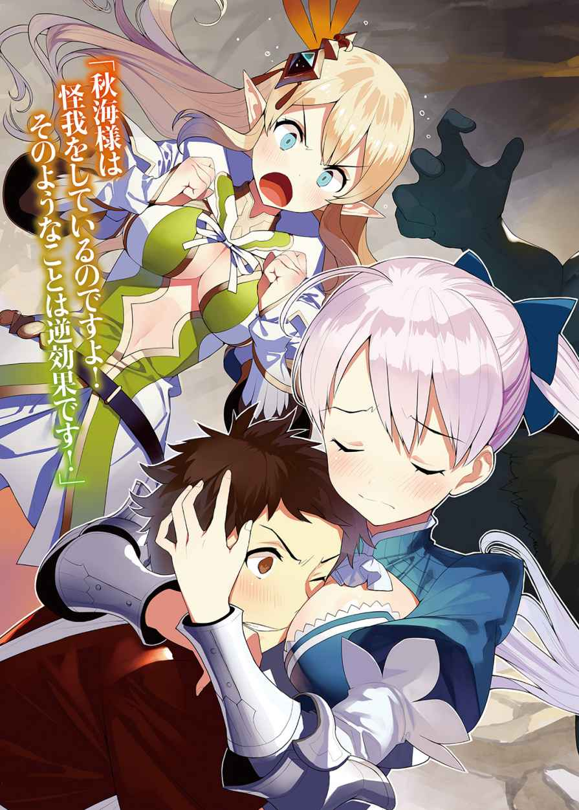

| 100円ショップ店員が異世界トリップした結果。2 (HJ文庫) | |
| 宮元戦車 | |
| (2016) | |


序章
「う、ぐ......」
むわっとする濃 い草の匂 いがする。
目を開くと、見慣れない草花が見えた。
高い気温とじめじめした空気、眩 しい太陽。
どこからともなく蝉 の声が聞こえてきそうな森だ。
「ここ......どこだ？」
俺 は身体 を起こした。
この雰 囲 気 、なんとなく日本じゃないような気がする。
辺りを見 渡 すと、空に手のひらサイズくらいの羽が生えた人が数人飛び回っていた。まるでファンタジーの世界に出てくるような妖 精 だ。
「フェアリー......？ ってことは、やっぱりここはヴァーミアンなのか!? 」
二週間ほど前のこと。
俺は親が経営している１００円ショップ――１００ で妹のまつりと仕事をしていた。
その最中、異世界――ヴァーミアンに飛ばされて、エルフの魔 法 使 いエリューシカと出会った。
そこで、ルーフ国の第二王女リズが第一王女リアンに認められたくて起こした姉妹喧 嘩 のようなものに巻き込まれた。そして、俺はドラゴンを退治することになってしまった。その事件はこの世界では魔 王 事件と呼ばれることになった。
もう二度と召 喚 されることはないだろうと思っていた。
「あれ、みんなはどこだ」
召喚時に店を包 むような大きな魔 法 陣 だったから、前回と同じような感じだと思っていた。
俺だけ場所がずれたのか？
もしも、そうなら店やまつりだけじゃなくて、新人のバイト――椿 るなもいたはずだ。
脳 裏 に黒 髪 のツインテールの少女の笑 顔 が思 い浮 かぶ。今時の女の子で、俺をからかうのが趣 味 というような明るい性格だった。彼 女 も近くにいたから、巻き込まれた可能性は高い。
そのとき、がさがさと葉が揺 れた音が背後から聞こえた。咄 嗟 に振 り返 るとすでに音は消え、鬱 蒼 とした木々だけが静かに佇 んでいた。
風はなかった。ということはモンスターか!?
まずい。ポケットには油性ペンや防犯用のカラーボールくらいしかない。
「エ、エリーか？」
一 抹 の希望を込めて俺は名前を呼ぶ。
その声に反応するように、黒い人 影 が木の陰 から飛び出してきた。
不意を突 かれた俺は硬 直 してしまった。
まずい！ や、やられる！
「あーにぃ！」
人影は俺に抱 きついてきた。それは俺と同じ「１００ ！」と書かれたエプロンを学生服の上に着けた少女だった。
「ま、まつりか？」
少女は顔を上げた。その愛 嬌 のある顔は妹のまつりだった。
「もう、遅 かったから心配したよ！」
遅かった？
「俺は今、この世界に来たばかりだぞ。一 緒 に来たんじゃないのか？」
「え、まつりはもう二十分くらい前からこの森にいたよ」
きょとんとしたまつりに嘘 をついている様子はない。
それにまつりの靴 は泥 で汚 れている。これは森を歩き回った証 拠 だろう。
時間差も発生しているなんて。今回の召喚はどうなっているんだ。
「あとはエリューシカちゃんと、傍 にいたるなちゃんもいるはずだよね。どこにいるんだろう」
「でも、まつりが探しても見つからなかったんだろ？」
「うん、森の中を色々見てたけど、でっかくて腕 が十本ある熊 しか見なかったよ」
明らかにモンスターだ！
「だ、大 丈 夫 だったのか？」
まつりの身体に外傷は見当たらない。
「うん、財 布 落としたら届けてくれたよ」
童話かい！
「でも、無事で良かった」
胸をなで下ろした。
「うん、ほんと。ネコババしないなんていい熊さんだったね」
「財布のことじゃない！」
なんで異世界に来てまで妹の財布を心配しなきゃいけないんだよ。全く天然ボケなところはどんなときでも相変わらずだ。
「でも、まつりがここまで森の中を探しても見つけられないってことは、るなはまだこっちに来てなさそうだ」
もしかすると、召喚に巻き込まれなかったかもしれない。
「そうだね。じゃあ、エリューシカちゃんを探そうよ」
「ああ、俺たちを召喚したんだ。向こうもこちらを探して――」
「......誰 かいるのか？」
そのとき、女性の声が聞こえてきた。
もしかすると、俺たちを探しに来たルーフの者かもしれない。今度こそ、エリューシカか!?
「おーい、こっちだ！」
俺は叫 んだ。
草木を掻 き分 けて現れたのは――まるで漫 画 から抜 け出 たような女騎 士 だ。
美しくも険しい黒の瞳 、小さな唇 、そして、真っ白な長 髪 で白いドレスを着ていた。高級そうな生 地 には複数の鉄 片 が縫 い付 けられており、まるで鎧 のようだ。
その手には容姿と似合わない無骨な刀が握 られていた。
「......こんなところに人がいるなんて驚 きだ。道に迷ったのか？」
女騎士が刀を鞘 に納めた。
「そういうわけではないんですけど、あのここはどこですか？」
俺の問いに、
「ここはルーフ城のすぐ近くの森。この辺りはモンスターも出るというのに、よく襲 われなかったな」
女騎士が答えた。
ルーフ。やはりここはヴァーミアンか。やはり俺たちを召喚したのはエリーに間 違 いないだろう。
「私は探 索 が終わったからこれからルーフ城に戻 るところだが、お前たちも来るか？」
「助かります」
「わーい、ありがとうございますー」
俺とまつりは頭を下げた。
渡 りに船とはまさにこのことだ。
「......お前たちは幸運だ。この『白き妖精』と言われたデュアルテイル国第一騎 士 団 のフローリィ・ダンディライオン・フォン・デュアルテイルに出会うなんて」
自ら『白き妖精』を名乗るなんて相当な自信家だ。それにしてもデュアルテイルか。どこかで聞いたな。
「俺の名前は譲 原 秋 海 です。こっちが妹のまつりです」
「よろしくねー」
フローリィの目が見開いた。
「ユズハラ......アキウミ......？」
「あ、ああ」
「お前が勇者......」
フローリィは刀を抜いた。不 穏 な気配だ。
「その、ルーフ国で魔王を退治したときにそう呼ばれるようになりました」
フローリィは俺の顔に刀の切っ先を向けた。
「ユズハラアキウミ！ お前には私の父......デュアルテイル国王を殺した殺人罪で逮 捕 状 が出ている！」
フローリィは俺を睨 みつけた。
「は、はあああああ!? 」
俺の叫びは青い空に吸い込まれた。
第一章
ルーフ城は相変わらず無骨な砦 のような城だ。
ただ人の数が違 う。前は兵士たちしか見かけなかったが、今は文官が多く行き交 っていた。
フローリィに刀を向けられたまま、俺たちはルーフ城に入った。
城の者たちは俺たちを見て驚くが、フローリィはそれを気にするようなそぶりは見せなかった。
「ねー、誤解だよー。あーにぃは確かにまつりのプリンを勝手に食べるような人だけど人は殺さないよ」
「いや、あのプリン賞味期限切れてたから」
あのことまだ根に持ってたのか。
「黙 って前を歩け」
フローリィは小さく舌打ちをした。
とりつく島もない。
俺が彼女の父であるデュアルテイル国王を殺したというが、会ったこともない人間を殺せるはずがない。何かの誤解だ。
「姫 様 ！ また勝手にお城を抜け出して探検してたのですね！ 私たちは大使なのですよ！」
そこにゆったりとしたローブの中年女性が駆 け足 でやってきた。
「ミゼンダ、罪人を見つけた。この国の王からの許可は貰 っている。いますぐ護送用の馬車を用意してくれ」
フローリィは外を指さしながらミゼンダに指示を出した。
「私はこいつらを見張っておく。こいつらはデュアルテイル国で裁く」
「は、はい！」
そのまま城の奥 に進んだ。モーセの十 戒 のように人々が割れて道が出来ていった。
むき出しの岩の通路を抜ける途 中 、
「秋 海 様！」
ローブを着た金 髪 の少女が奥から走ってやってきた。
彼女こそ、今回と前回、この世界に俺たちを召喚したエリューシカ・サイードだ。
「ひ、久しぶり。エリー」
俺は挨 拶 するように手を上げる。
「フローリィ様！」
エリーがフローリィを睨みつけた。
「事情を聞くだけというから彼 らを召喚したんです！ なのに秋海様に剣 を向けるなんてどういうことですか！」
「こいつらは犯罪者として私が国に連れて行く。それが姫 としての務めだ」
フローリィは話を打ち切った。まるで犯罪者を逮 捕 した警察官のように一 切 の情がない。
「しかし！」
憤 慨 したエリーが尚 も言葉を続けようとする。
「落ち着きなさい。エリューシカ。彼らの引き渡しは私が許可したことです」
エリーの背後から、襟 にフリルを巻いた高級そうな貴族服の中年男性が現れた。禿 げた頭部をしきりに撫 でて、無 遠 慮 な視線を俺たちに投げる。
中 肉 中 背 の冴 えない外見のその男性は、服が立派でなければ、どこにでもいるような中間管理職にしか見えない。
「ダ、ダルマ大臣、話が違います！」
エリーが叫んだ。
どうやら彼がルーフの大臣か。初めて見た。
ダルマ大臣はやれやれと肩 をすくめる。
「考えてもみなさい。二週間ほど前、デュアルテイル国王が異世界の魔 法 で殺された。そのとき、一番近くにいた異世界の者は我 が国 にいた彼らしかいない！ 王はデュアルテイル国でも強力な攻 撃 魔 法 の使い手だった。倒 せるのは魔王事件を解決した勇者と呼ばれる彼しかいない！」
ダルマ大臣が俺に指を突 きつけた。
「異世界の魔法ってどういうものですか？ あなたたちが知らないだけで、もしかすると、この世界のものかもしれないじゃないですか」
俺は反論した。
「この世界の魔法ならば、必ず魔 力 の痕 跡 がある。しかし、それが全く見当たらないそうだ。前回、君が使った異世界の魔法と全く同じようにな」
そういうことか。
「現場には引き金と先 端 に細長い筒が付いた鉄の塊 があった」
「それってまさか銃......なのか」
思わず口から出てしまった。
「それ見たことか」
ダルマ大臣が鼻を鳴らした。
しまった。失敗した。でも、そういうことか。異世界の物を扱 うとすれば現状、俺たちしかいない。だから、犯人扱いされているということか。
「秋海様と私はずっと一緒でした。そんなことをするはずありません！」
エリューシカがダルマ大臣に必死に訴 える。
「......君を信 頼 していないわけじゃない。しかしだね。こうして同盟国の大使が来ているのだよ。こちらとしても相応の対応をしなくては」
ダルマ大臣は懐 からシルクのハンカチを取り出して額の汗 を拭 った。その動作は中年サラリーマンのように年季が入っている。
「だからといって事情も聞かずに連行するなんて！」
エリーがダルマ大臣に詰 め寄 った。
「......私はこのまま本国に戻ってもいい」
一同がフローリィに視線を移した。
「ただし、その際は包み隠 さず本国に報告する。それが姫としての務めだ」
フローリィの言葉はここで断ったら、間違いなくデュアルテイル国と軋 轢 を生むといっているようなものだ。
ダルマ大臣の顔色が青くなった。
「こ、この度 のことは王も了 承 済みだ。我が国は貴国と争 うつもりはない！ 早く連れて行ってくれ！」
ダルマ大臣が踵 を返した。ルーフは小国だから出来れば戦争したくないとはいえ、弱気すぎる対応だ。
「待ってください！ そんなことは絶対にさせません！」
エリーはダルマ大臣の前に両手を広げて立 ち塞 がった。
「むぅ、宮 廷 魔 法 使 い風 情 が」
二人が睨 み合 う。
「これ以上は話の無 駄 だ。犯人はもう決ま――」
「デュアルテイル騎士団っていうのは、ロクな調査もせず怪 しいやつを逮捕するだけの集団なのか？」
フローリィの言葉を遮 って俺はにやりと笑った。
「この『白銀の妖精』と呼ばれた私を愚 弄 するのか？」
いつの間にか二つ名が変わってるぞ。
「俺を犯人だと思う根 拠 は三つ。異世界の魔法を使うことと、デュアルテイル国王が殺害されたときこの世界にいたこと。そして、魔王を倒すほどの腕 前 なら単独で国王を倒せるということ」
「それだけで十分だ」
フローリィが刀を俺の頬 に当てた。冷えた刃 の感 触 に思わず表情が強 ばる。
「あーにぃ！」
「秋海様！」
まつりとエリーを安心させるように、俺は必死に笑 みを作った。
「いや、まだ可能性はある。俺たち以外の異世界の人間だ」
「......馬 鹿 な。そんなことがあるはずがない」
フローリィは鼻で笑った。
「いえ、可能性はあります。他の国なら可能性はないかもしれません。ですが、デュアルテイル国は魔法大国です。なら、私以外に召 喚 魔 法 を使った者もいるかもしれません！ もう一度考えてみてください！」
エリーの必死の訴えに、
「......それは」
フローリィの瞳に僅 かな迷いが生じた。
「可能性がある以上、俺は納 得 できない。だから、俺をデュアルテイル国まで連れて行って、しっかりと調査をさせてくれ」
俺はフローリィを見つめた。
「あんただって罪を認めていない人間を裁くのは嫌 だろう！」
パッと見てもフローリィの服はしわや汚れが少ない。こまめに手入れをしている証拠だ。
１００ でのアルバイトの経験上、こういった几 帳 面 な性格であることが多い。そういう人間は間違ったことを嫌 う。
「......わかった。確かに自分のしたことを認めない人間は嫌いだ。姫の心得その一。平民の発した言葉でも、聞くべき意見なら積極的に取り入れるべし」
フローリィが刀を納めた。
ふぅ、よかった。
「三日間やる。私はその間にお前が他の者を犯人だとする可能性を全 て消す」
「ああ、ありがとう」
俺が頭を下げると、フローリィは黙って背を向けた。
「というわけで、まつり、エリー。ちょっと行ってくる」
不満そうなエリーとまつりに笑みを見せる。
「それは――きゃ」
エリーが口を開いた瞬 間 、ダルマ大臣がエリーを押 しのける。
「いやー、素 晴 らしい！ まさに我が国の英 雄 にふさわしいですな！」
喜色満面でダルマ大臣が俺に近づいて手を握 る。しかし、その目は笑っていないため、どこか白 々 しい。
「は、はぁ」
なんだ、いきなり。
「もしも、何か大 怪 我 をしたら真っ先に葬 儀 の者を手配しますぞ」
死ぬ前提かよ。
「違うよ！ まずは弁護士だよ！」
「それも違う！ 医者だ！ 医者！ 死ぬって決まったわけじゃないだろ！」
なんでみんな俺を殺そうとするんだ。
「ダルマ大臣！ なんてことを言うんですか！」
「そうだよ！」
エリーとまつりがダルマ大臣を睨んだ。
いや、まつりは大臣と似たようなこと言ってたから抗 議 できないだろ。
「で、では、これで失礼しますぞ。いやー、よかったよかった。我が国は最善を尽 くしました。その点をくれぐれもアルフレッド様にお伝えください」
ダルマ大臣は次にフローリィの手を親しげに握ると足早に去って行く。
「ふー、やっと行ったか」
フローリィが汚 いものに触 れたように手を叩 く。酷 い対応だが、気持ちはわかる。態度がうさんくさすぎて、俺もあまり好きになれない。
「随 分 と弱気な大臣だな」
俺が言うと、エリーは曖 昧 に頷 いた。
エリーは周囲を見渡すと、俺の耳元に顔を近づけた。
「ここだけの話。例のリズ様による一件があった後に起こった内乱で、ルーフ国はかなり疲 弊 しています。そのため、大臣や王は他国に対して少しでも恩を売っていこうと考えています。特にデュアルテイル国は大国です。できる限りトラブルは避 けたいのでしょう」
エリーは小声で説明した。
納得はできた。リズが暴れた際にルーフに援 軍 と称 して攻 め込 んできた国だよな。そこまで弱気にならなくてもいいだろ。......こちらのほうがそれだけ立場が弱いってことだろうけど。
「でも、エリー、今回の召喚は場所が森だったり、時間差があったり、どういうことなんだ」
「申し訳ありません！ それが以前、秋海様を店ごと召喚した際、秋海様はとてもお困りでしたから、新しい術式で秋海様とまつり様だけを包むような範 囲 で召喚したつもりでした」
エリーは頭を下げた。
「でも、なぜか魔力が足りず、転移先が固定できませんでした。そのため、森に飛ばされたのだと思います」
魔力が足りなくなった原因か。
ふと、思いつく。
「それはもしかして――」
俺が問う瞬間、
「おい、それよりもデュアルテイル国までは馬車で丸一日かかる。さっさと出発するぞ」
フローリィが城の出口に向かって歩き出した。
「あ、ああ、わかった」
俺はその後に続く。
この話は後でいいか。
「ま、待ってください。私も行きます！」
エリーが名乗りを上げた。
「はいはい！ まつりも行くよ！」
続けてまつりも手を上げる。
「い、いや、二人とも、ここに残ったほうがいいんじゃないか」
以前の魔王退治は国内のエリーやリアン王女などのバックアップもあった。
でも、今回は国外だ。とても二人の力が及 ぶとは思えない。
そして、何よりも今回は１００円ショップがない！
前回の魔王退治は店のアイテムがあったからできたことだ。正直、先が読めないという点では魔王退治よりも難しい。そんな事件にエリーやまつりを巻き込みたくない。
「......秋海様。今回は１００円アイテムがないから私たちを守れないと考えていらっしゃるんですね」
バレてたか。
俺はばつが悪くなって頬 を掻 いた。
「ご安心ください。前回の送還の際、店内にいくつかの魔法陣を仕込みました。店内にあるものならば、場所がわかればいつでも魔法で取り出すことができます」
い、いつの間に。
「ですから、１００円アイテムを使うのであれば、是 非 、私も同行させてください」
１００円アイテムとそれを強化するエリーの魔法はかなり役に立つ。
「わ、わかった。じゃあ、エリーは連れて行くけど、まつりはここに残ったほうがいい」
俺はまつりの肩に手を置いた。俺の真 面 目 な態度にまつりも表情を僅かに引き締 める。
「......あーにぃ。店内の商品を全部覚えてるの？」
「も、もちろんだ。俺だって店員だぞ」
笑顔で親指を立てた。
多分だけどな。
「じゃあ、問題です。店内にあるメイク落としの種類はいくつでしょうか」
よりによって、メイク落としかよ。女性向けは全く関知していない。そのジャンルはまつりやるなが担当してたからだ。
「えっと」
俺は額に手を当てた。確か一種類......いや、二種類はあったはずだ。
「......二種類、かな」
俺の答えに、まつりはにっこりと笑った。
当たった、か？
「正解は三種類でした！」
まつりは得意げに笑った。
ぐあ！ 違ったか！
思わず頭をかかえる。
くっ、やはり店内のことはまつりにかなわないな。
「そもそもメイク落としってなんだよ。石けんじゃ駄 目 なのか？」
「化 粧 は油を使ってるから石けんだと落ちにくいんだよ。油を溶 かすメイク落としを使わないと駄目なんだよ」
まつりはやれやれと肩をすくめた。普 段 は俺が説明することが多いから、意 趣 返 しのつもりなのだろう。
「ほら、まつりも連れて行ったほうがいいよね」
正直、気乗りしないが。
「わかった」
俺は手を上げて降参した。
「やりましたね。まつり様」
「だね。エリューシカちゃん」
まつりとエリーがハイタッチする。
「......お前たちも一緒に行くのか？ 護送車は囚 人 が一人しか入らないぞ」
「秋海様を囚人として扱うつもりですか!? 」
エリーは目を見開いた。
「当然だ」
フローリィは頷いた。
「そんなの駄目です！ まだ完全に秋海様がやったと決まっていません。それに秋海様はこの国を救ってくれた英雄です！」
エリーはフローリィに詰め寄る。これほど激しい剣 幕 のエリーは珍 しい。
「それもそうだがこちらにもメンツがある。......わかった。ならば、お前に決めさせよう」
フローリィが俺の肩に手を置く。他の可能性が出てきた以上、無 理 矢 理 護送車に乗せるわけにはいかないか。
「静かで暗くて臭 い護送車はいい。精神修 行 にもってこいだ」
「秋海様！ 乗り心地 が良いユニコーンの馬車で参りましょう！」
エリーとフローリィが同時に俺に向き直った。
「どっちを選ぶ？」
「どっちを選びますか!? 」
そんなの決まってるだろ。
「あーにぃ。その顔はまた一人だけ茨 の道を進むつもりだね」
俺の内心を見 透 かしたように、まつりは涙 を拭 うふりをする。
「なんで好きこのんでそんな道を選ぶんだよ。楽な道があるならそっちに行くからな。......当然、ユニコーンの馬車だ」
「そうですよね！」
エリーが満面の笑みを浮かべた。
「うぅ、馬鹿な」
フローリィが歯がみする。
あの条件でなんで護送車を選ぶと思ったんだよ。
「では、ユニコーンの馬車の準備をお願いします！」
エリーが近くにいた兵士に指示を出した。それを聞いた兵士は敬礼をして城の外へ駆 けていった。
「あ、あの、フローリィ様。護送車の準備ができましたが」
そこにミゼンダがやってきた。後ろには似たような服装の男女が数人佇 んでいた。
「......私はエリューシカの馬車で行く。お前たちはその護送車で先にデュアルテイル国に向かってくれ」
「で、ですが、姫様を一人にするなんて」
ミゼンダが眉 をひそめる。
「いいから行け」
「は、はい」
フローリィが手で追 い払 うような仕草をした。ミゼンダたちは頭を下げて去っていく。
「え。フローリィもこっちの馬車に乗るのか？」
「当たり前だ。このまま逃げるかもしれない。もしも、そうなったらお兄様に顔向けができない」
「いや、別に逃げないけどな」
そもそもどこへ逃げろと言うんだ。
「お前たちのことなんて信用できるわけがない」
フローリィは吐 き捨 てた。
「そういう言い方はないんじゃないでしょうか」
エリーが噛 みつく。
「なんだと」
フローリィがエリーを睨みつけた。
「魔法に長 けた種族だからといって勘 違 いするな。魔法ならばデュアルテイル国のほうが優 れてる」
フローリィが刀の柄 に手を置く。
「いや、それ魔法使う感じじゃないよな」
「あの刀から魔法が飛び出るんじゃないかな。花とか出たらすごいよね」
それ手品だから。
まつりは暢 気 だな。
とはいえ、俺 もあまり緊 迫 感 がない。
エリーは賢 いからこんなくだらないことで本気にならないだろう。
「こ、これ以上の無礼な態度は許しません！」
エリーも負けじと杖 を握りしめる。二人は激しく火花を散らせてにらみ合う。
まずい！ これ、本気か!?
一 触 即 発 の雰 囲 気 。
「いやいや、二人とも落ち着いてくれ」
俺は慌 てて二人の間に入る。
「エリューシカちゃんも杖から花を出すのかな」
思わずずっこけそうになった。
「......ほんわかする光景だな。互 いの武器から花が出れば世界も優 しくなるだろうな」
「だよね。二人ともまさかこんなことで喧 嘩 したりしないもんねー」
まつりが微笑 んだ。
先に視線をそらしたのはフローリィだった。
「私は馬車のところで待ってる」
フローリィが俺たちに背を向けて歩き出した。
「お前......えっと、アキウミ」
しかし、フローリィは途中で足を止めて振 り返 った。
「なんだ」
「エルフは戦いを好まない種族だってお兄様から聞いた。なのに、そのエルフにここまでさせるなんて。まさか、本当に――」
フローリィは途 中 で言葉を切った。
「いや、やはりなんでもない」
頭を振って再び前を向いて歩き出した。
なんなんだ。一体。
「すごく勝手な人ですね」
フローリィの態度がエリーはよほど腹に据 えかねたらしい。
こんなときは話題を変えよう。
さっきから気になっていたことを聞いてみるか。
「ところでエリー。さっきの話の続きだけど、俺とまつり以外に店ではもう一人いたんだ。新人のるなっていう女の子なんだけど。召 喚 に失敗したのはそれが原因じゃないか？」
「え、もう一人ですか!? い、以前、秋海様は店には二人しかいないと仰 っていましたので、てっきり店には秋海様とまつり様だけだと......」
魔 王 退治が終わった後、店のことがもっと知りたいと言うエリーに勤務体制を教えた覚えがある。
「元の世界に戻ってから新人が入ってきたんだ。その、やっぱり問題なのか？」
俺の問いに、
「......わかりません。ですが、二人分の魔力で秋海様とまつり様が来られたので、残りの一人は魔力が足りず途中で送り返されたと思います」
エリーは首を振った。
「そうか。それならよかった。でも、戻ったらるなになんて言い訳をしよう」
俺は胸をなで下ろした。
「ちょっと千葉県のネズミランドに召喚されちゃった。とかでいいんじゃない!? 」
まつりが手を叩 いた。
「無理だろ！ まぁ、確かに魔法の国だけどさ」
「魔法の国ですか。どういった魔法を使うんですか？ きっと秋海様の世界ですから、平和な魔法なんでしょうね」
魔法という言葉にエリーが目を輝 かせる。
「うんとね。ちょっと昔に私たちの世界にあるヨーロッパって大陸は、ネズミのせいで人口の三割が死んだらしいよ」
「思った以上に怖 い魔法でした！」
「それ魔法じゃなくて流行り病だろ」
俺はツッコんだ。
確かにネズミのせいだけど。あのネズミとは無関係だ。
「あの、嘘 なんてつかないで、正直に話すわけにはいかないでしょうか？」
エリーに言われて考えた。
俺でも現実を受け入れるのに時間が掛 かったんだ。そんな簡単にいくはずがない。
「そうだね。あーにぃ！ こうなったら真実を話すしかないよね！」
俺は腕 を組んで眉をひそめた。
「うーん。俺が説明しても頭がおかしい人と思われるだけのような気がするけど」
「覚 悟 の上だよ！」
「俺はそんな覚悟できてない！」
勝手に人の覚悟を完 了 させやがって。
「とはいえ、現状はそれくらいしか方法がないんだけどな」
「あーにぃが頭おかしい人って扱われてもまつりは週三日で妹だよ！」
「後の四日はなんなんだ！」
こんなこと話してないでさっさと馬車に行くか。
「今回は街 道 を進みます。その途中には宿舎がありますから、そこでお風 呂 がついている寝 床 が確保できます」
「そうなのか。じゃあ、大分楽になるな」
前回はほぼ馬車の中で寝 るような野宿だったからな。
正直、あれは疲 れた。でも、異世界の宿か。
八畳 一間の綺 麗 な畳 の床 、二階の窓からは雄 大 な山の景色が見えて、疲れを癒 やす温泉がある宿のようなものが思 い浮 かんだ。
今回は楽な旅になりそうだ。
「そういえば、秋海様。少しお待ちください」
エリーが城の奥に消える。戻 ってきたとき、革 製 の鞘 に包まれた一 振 りの剣を持っていた。
その剣は見覚えがある。
「それはまさかダイソー・ドか!? 」
「はい。きっと必要になると思い用意しました」
剣をエリーから受け取った。
「ご要望の通り、事件の後に受け取ったペンキを塗 って、魔力を吸収しないようにコーティングしました」
もはや剣と言うよりもどちらかといえば模 擬 刀 に近い。
「そこまでしてこの剣を使わなくてもいいんじゃないでしょうか？」
「使い慣れた剣が一番だ。それに切り札にもなる」
ダイソー・ドの刀身は周囲の魔力を無差別に吸収してしまう効果がある。このヴァーミアンにあるほぼ全てのものに魔力が存在しているため、魔力を失ったものは消 滅 してしまうらしい。
いざとなればやすりでペンキを剥 がせば効果を発揮するはずだ。鍔迫り合いなどの激しい戦闘でペンキが剥がれるかもしれないが、前回は布程度でも効果の発揮を防げたから、大丈夫だろう。
角が生えた白い馬――ユニコーンと再会した俺たちは馬車に乗り、街道を突 き進 む。
四時間ほど走ると、徐 々 に日が暮れてきた。
夕暮れから夜に変わる頃、ユニコーンが止まった。
「着きました。秋海様」
御 者 台 にいたエリーが客室に顔を出した。
「楽しみだね。あーにぃ！」
「そうだな。異世界の宿なんて初めてだもんな」
前回は野宿だったから楽しみだ。
「罪人のくせに暢 気 なものだな」
離 れた場所に座 っていたフローリィが憎 々 しげに口を開いた。
「だから、罪人じゃないって言ってるだろ」
「......ふん」
フローリィがそっぽを向く。
俺が彼 女 の父親を殺したと思っているみたいだから、しょうがないだろうけど。
「ほら、行こうよ！ 博 多 とんこつ醤 油 温泉とかあったら入ってみたいね！」
「いくら異世界だからってそんなラーメンの出汁 みたいな温泉はやだ」
異世界すぎる。そういうところは普 通 でいい。
ただ、こうしてまつりが明るくしてくれるお陰 で、馬車の中でも雰囲気が悪くならずにすんだ。
馬車から降りると、目の前には立派な温泉宿――ではなく、年季の入った木造の平屋があるだけだった。その周りは温泉街どころか、建物ひとつ見当たらない深い森に囲まれていた。
「これが宿？」
俺は呆 然 と呟 いた。
「ふ、どんなものを想像していたか知らないけど、このくらいが普通だ」
フローリィが鼻で笑った。
「で、でも、温泉は楽しみだな」
「あの、この小屋に温泉はありません」
エリーが否定した。
......そういえば、一言も温泉があると言ってないな。宿舎とお風呂の組み合わせで温泉があると思い込んでいた。
「ええ!? 」
まつりが肩を落とした。
「そ、その代わり、この宿は井 戸 水 が豊富なので、備え付けの薪 で火さえ熾 せばちゃんとしたお風呂になります」
エリーの説明にまつりとなぜかフローリィも胸をなで下ろす。
「薪じゃなくて魔 法 陣 を使って湯を沸 かしたほうが早い」
フローリィが言ってきた。
「魔法陣でお湯も沸かせるのか」
俺の問いに、
「はい。魔 力 石 を燃料として使った魔法と同じように、魔法陣は魔力石を特 殊 な液体で溶かしたものを利用して陣 を描 きます」
エリーは頷いた。
そんな方法もあるのか。
「誰 か！ お湯を沸かせ！」
フローリィが宿に向かって叫 んだ。
「なにやってんだ？」
「知らないのか？ こうすれば、使用人が出てきてくれるんだ」
フローリィはどや顔だった。
「この小屋は無人です。そんな設備ありません」
「な、なに！」
......当然だろ。俺だって一目でここが無人だってことに気づいた。
もしかして、フローリィは世間知らずなのか？
「じゃ、じゃあ、どうすればいいんだ？」
フローリィが俺の肩を掴 む。
なんでこんなことで慌 てるんだよ。
「俺たちで沸かすしかないだろ」
肩の手を払 った。
「......私たちで......風呂をっ」
フローリィは唾 を飲み込む。
「いやいや、当たり前だろ。なんでそんな絶体絶命みたいなんだ。この世界の住人なんだからそれくらいやったことあるんじゃないか？」
「も、もちろんだ。姫 の心得その二。庶 民 に合わせて節約も必 須 」
フローリィが笑みを浮かべた。
どうやら落ち着きを取 り戻 したらしいが。
本当に大 丈 夫 か？
「じゃあ、まずはどうするんだ」
「ま、まずは小屋に火を放つ」
「放火か！」
俺のツッコミにフローリィが押 し黙 った。
「仕方ありません。王族の方は専用の使用人がいますから、自分で何かをするということがありません」
エリーが口を挟 んだ。
これだから王族は。
「しょうがない。俺がお湯を沸かすから先に入ってくれ」
俺は小屋の扉 に手をかけた。木製でしっかりした作りの片引き扉だ。
「待て。その隙 に馬車を奪 って逃げるつもりだろう？」
フローリィが牽 制 するように睨 んだ。
「妹やエリーを置いていけるか。そもそも馬車の運転なんてしたことないんだぞ」
振り返って溜 息 を吐 いた。
「それは、そうだが......」
理解はしたが納 得 はいかないというようにフローリィが唸 った。
「あ、秋海様。こういったことは私が」
「いや、エリーは馬車の運転で疲れているだろ？ それに薪で湯を沸かすくらいなら俺でも出来る」
エリーに俺は首を振って制した。
ちょっとはいいところを見せればフローリィも態度を和 らげてくれるだろ。
「......わかりました。では、秋海様。この小屋には火打ち石はありますが、慣れていないと使いづらいと思います」
「そうなのか。でも、俺はライター持ってないんだ」
今回は店ごと召喚されたわけではない。
「ご安心ください。さきほども言いましたが、１００ には魔法陣が仕込まれています。その魔法陣を使うことで店内のものをいつでも呼び寄せることができます」
エリーがどや顔で胸を叩いた。
「店は改装したんだけど大丈夫なのか？」
俺はエリーに尋 ねた。
「魔法陣は店の天 井 の四 隅 に印 したので、魔法陣が残っていれば問題ないと思います」
エリーが僅かに胸を張った。
どうやら今使う魔 法 はエリーのとっておきらしい。
「さきほども簡単に説明しましたが、私自身は店内の様子が大体わかりますが、どういったものが必要なのかわかりません。ですので、この地図をお渡 しします」
エリーが腰 のバッグから折りたたまれた紙を渡す。広げてみると、それは棚 の場所が描 かれた簡易的な店内の地図だった。
「この地図上の場所を示していただければ、その部分に小さな空間を作って取り出します。その際、一度に召喚できるものは大小関 わらず一個までとなります」
「あーにぃ。ライターはね。この棚の上から三番目だよ」
「わかりました。それでは――、結界蛇 ！」
エリーが呪 文 を唱えると杖から光の魔法陣が中空に描 かれる。そして、次に杖から鎖 が伸 びると魔法陣に吸い込まれて消える。どうやら、鎖は魔法陣の中を進んでいるようで勢いよく伸び続ける。
やがて、何かを掴んだらしく、鎖が勢いよく戻る。それが掴んでいたのはハロウィン用のパーティグッズである火 薬 銃 だった。
「おぉー。すごいー。まるで手品みたいー」
まつりが瞳 をきらきらと輝かせる。
「これじゃ、ないですね」
エリーから火薬銃を受け取って首を振る。懐 かしいな。よく本物っぽく改造したりしてた。
「す、すみません。まだ鎖の操作に慣れていなくて。今度こそ！」
エリーが意気込んで先ほどと同じ魔法を使う。
しかし、高さが微 妙 に違 うらしく、儀 礼 用のマスク、チアリーダーが使うぼんぼんなど何度か全く違うものが出てきた。
何度か試 行 錯 誤 して、ようやくライターが出てきた。
「お待たせしました。こちらをどうぞ」
俺はエリーからライターを受け取った。
「ありがとう。これで楽になるな」
荷物を持たなくていいという意味でも旅がしやすくなった。前回は持ってきた中からなんとかしなきゃいけなかったからな。
「ほう、契 約 した召 喚 獣 の一部を使った魔法か。それならば、魔力の消費が最小限に抑 えられる」
フローリィが吐 息 を漏 らす。
「さすがは魔法大国の姫 様 ですね」
エリーのフローリィを見る目が僅 かに変わった。
「当然だ。私は姫だからな」
フローリィが胸を張った。
しかし、明確な場所を指定するとなると俺だけでは難しそうだな。こんなことなら、もっと仕事を覚えておけばよかった。
「じゃあ、みんなは先に休んでいてくれ。風呂は小屋の裏にあるんだよな？」
「は、はい。裏手に井 戸 があります」
「わかった」
さっそく俺は小屋の裏手に向かって歩き出した。
「逃 げるなよ」
フローリィが俺の背に向かって念を押 してきた。
俺は小屋の脇 にある小道に入り裏側にたどり着いた。そこは乱雑に置かれた斧 と薪の束と小屋側に設置されたかまどのようなものがあるだけの簡素な場所だった。よく見れば、かまどの上には窓があり、その横には井戸が掘 られている。
窓から小屋の中を見れば、六畳ほどの部屋には四～五人用の長方形の鉄の浴 槽 が置かれていた。その脇には脱 衣 所 らしき扉が見える。
それにしても人気も無いし窓の位置も低い。覗 き放題だな。......いや、覗かないけどさ。
井戸から水を汲 んで浴槽に流していく。浴槽が満 杯 になるまで続けた。
はぁ、疲 れた。
俺はしばらく腰を地面に下ろして休 憩 する。
人類の最も偉 大 な発明は水道だな。
......さっさと続けるか。
俺は立ち上がって、かまどに薪をいくつか放 り投 げていく。
あとは種火だな。俺は薪の近くにあった小枝を拾いライターで火をつける。
よく乾 いた小枝は一気に燃えた。そのままかまどに投げる。しばらくすると、薪が燃えて立派な炎 となった。
「これでいいな」
服で扇 いで適当に風を送る。
酸素を得て炎はますます燃える。
二十分ほどで丁度良い温度のお湯が沸 き上 がった。
「おーい、沸いたぞー」
「はーい！」
俺が大声を上げると、待っていたと言わんばかりにまつりが返事をする。
みんなが風呂に行っている間、どうしようかな。
火の番をしてるか。......いや、ここにいれば、逆に疑われそうだからやっぱり離 れよう。
俺は小屋の中に戻る。中は松明 のようなものが壁 に差し込んであり、それなりに明るい。教室ほどの広さがあり、奥 には脱衣所への扉があるだけだった。
見事に何もないな。森の中の小屋なんてこんなものかもしれないけど。
俺は壁に寄りかかって座った。腐 った木の臭 いが鼻につく。外よりはマシだが、居 心地 はよくない。
脱衣所のほうからはエリーたちのはしゃぐ声が聞こえてくる。
「馬 鹿 な......っ。これは！」
そのとき、フローリィの驚 いた声が届いた。
「どうしたんだ!? 」
俺の問いに反応は返ってこない。
どうやら、エリーたちには聞こえていないようだ。
「......それはそうです。そもそも」
「なんだ。その言い方は......」
エリーとフローリィが言い争 うような声や、ドタドタという物音が聞こえてきた。
「あーにぃ......すけ......！」
まつりの言葉が断 片 的 に聞こえてくる。もしかして、『あーにぃ。助けて』と言っているんじゃないか!?
よく考えれば、風呂という場には刀も杖もない。最も無防備な場所だ。賊 などが襲 撃 するには最適だ。
剣 を手にして脱衣所に入る。中は二畳ほどの空間にカゴだけ置かれた狭 い空間だった。カゴの中にはエリーたちの下着などが畳 まれており、男の俺には刺 激 的 すぎる。
二人の武器は......あった！
カゴの脇に立てられたフローリィの剣とエリーの杖を抱 えて、俺は風 呂 場 への扉を開け放つ。
一面の湯気が視界を覆 った。
く！ 敵はどこだ!?
みんなの裸 を見ないように素 早 く視線を移す。
「秋海様!? 」
「あーにぃ！ 我 慢 できなかったの!? 」
残念ながらというわけではないが、エリーもまつりもタオルを巻いていた。
それでも、エリーのお湯を弾 くぷるぷるの肌 や、まつりの柔 らかな二 の腕 がちらちらと見えてしまう。
「三人とも無事か！ 敵がいるのはわかっている！ じっとしているんだ！」
「敵？」
まつりがきょとんと首をかしげた。
「い、いや、助けてって言っただろ？」
「言ってないよ。フローリィちゃんがお湯に色がないから驚いていたら、エリューシカちゃんが当たり前だって言って、二人で喧嘩になったの。だから、まつりが『そんなことしてるとあーにぃはスケベだから覗きに来ちゃうよ！』って言ったの」
「......紛 らわしいだろ」
俺は肩 を落とした。
「もうあーにぃ、やっぱり覗きに来たね」
「いや、覗きに来たわけじゃなくて助けに――」
「そうか」
いつの間にか俺の目の前には体にタオルを巻いたフローリィがいた。
思った以上にか細い体 躯 だが、それでも胸や尻 はかなり発育している。窓から差し込む月の光に白い髪 が相まってキラキラと輝 いて見える。
俺は咄 嗟 に何かを言おうとしたが、剣 呑 な雰囲気に押されて声が出てこなかった。
「まさか、そんな嘘 をついてまで覗きをするような犯罪者だったとは」
フローリィから立ち上る湯気はまるで怒 りが形になったようだ。
この状 況 は非常にまずい。
「い、いや、そもそもフローリィ。なんでお湯に色が付いてないと驚くんだよ」
さりげなく話をそらす。
「う、いや、デュアルテイルの風呂は色が付いていたから、てっきり風呂とはそういうものかと」
その隙 に俺は出口に向かって少しずつすり足で移動する。
どうやら、デュアルテイル国は温泉が当たり前にあるようだな。
......そういえば、あれがあった。丁度、俺が品出ししたから場所は覚えている。
「エリー。これを使って地図のこの棚の小さな袋 を取り出してくれ」
俺はエリーに杖を渡し、店内図を広げて一部分を指した。
「わ、わかりました。結界蛇 ！」
エリーの杖から魔法陣と鎖が出る。鎖が魔法陣の中に入ると、そこから個装タイプの入 浴 剤 を掴んできた。
エリーから入浴剤が手 渡 されると俺は封 を切り、中にある粉末を浴槽に振りかける。
「なんだそれは」
フローリィは眉をひそめた。
「入浴剤といって、風呂を温泉みたいにするものかな」
お湯をかき混ぜるとすぐに乳白色に染まった。
「まつりの好きなにごり湯なんて、わかってるね」
別に俺が選んだわけじゃないけどな。
「嘘！」
「すごいな。お湯が白くなるなんて。こんな魔法は見たことがない」
エリーとフローリィが驚きの声を上げた。
魔法じゃなくて入浴剤だけどな。
初めて１００円アイテムを見たエリーと反応が同じだな。
フローリィは白色の風呂に目を輝かせていた。しかし、何かに気づいたように俺に顔を向けた。
「......ところでいつまでここにいるんだ？」
そういえば、ここ風呂だった！ つい逃げるのを忘れてた！
「まつりは気にしないけどね！」
「わ、私は気になりますが、あ、秋海様が、いたいのでしたら」
「普 通 は打ち首――わわ」
そのとき、フローリィのタオルが落ちる。
艶 めかしい裸 身 があらわとなる。
透 き通 るような美しい肌。引 き締 まった腰 。へその下の――。
ぷるぷるとフローリィが震 えながら、俺の手にあった刀を奪 う。
「あ、そ、それじゃあ、俺はこの辺で」
激しく嫌 な予感がする。
俺は踵 を返した。
「こ、殺す」
フローリィが刀を抜 く。そのまま大上段に構えて俺に向かって振 り下 ろした。
体をよじって間 一 髪 で避 ける。
「うわああああ！ 悪かったって！」
続いて二撃目を打ち込もうと刀を引き戻したフローリィから俺は逃げた。
「姫の心得その三！ 裸 を見たら打ち首！」
風呂場を脱 出 した俺の背にフローリィの声がかけられた。
「ほんと悪かった！」
罵 倒 を聞きながら俺は必死に謝 った。
「ごめん。今度から気をつける」
風呂から上がったフローリィに俺は頭を下げた。
この謝罪は何度目なのかもうわからない。
しかし、フローリィはただ俺を蔑 んだ目で見るだけだった。
当然と言えば当然だ。
現代ならば警察沙 汰 の事件だ。
フローリィが鼻を鳴らして離れた。そのまま外に出ようとする。
「こんな夜 更 けにどこに行くつもりだよ？」
俺は尋 ねた。
「見回りだ」
フローリィは振り返ることなく言い放った。
勢いよく小屋の引き戸を開けて外に出て行く。
「参ったな。どうやら完全に嫌 われたかもな」
「でも、フローリィちゃんは入浴剤が入ったお風呂は気に入ったみたいだよ。鼻歌を歌ってたもんね」
まつりがフォローする。
「あれで機 嫌 が良くなったなら、わざわざ追いかけられた甲 斐 があるけどさ」
感謝しているようには見えないけどな。
その後、俺も風呂に入り一息つく。上がってみるとフローリィは既 に戻ってきており、三人とも小屋の中央で眠 っていた。枕 などの寝 具 がない場所で横になって眠れるほど疲れていたらしい。
念のため、手が届く範 囲 に全員の武器を置いた。そして、三人とは少し離れた場所で横になった。
「ふぁ～～」
大きな欠伸 だった。
俺も思ったより疲れているみたいだ。
瞼 が閉じられていく。その中でなんとなくフローリィを見つめた。
無防備な顔を見ていると、つい風呂場でのことを思い出してしまう。
フローリィは随 分 とほっそりとして色白な体だった。鎖 骨 はどこか色っぽく、手だって白 魚 のよう。
大事に育てられてきたのがよくわかる。
......ん？ 変だな。
喉 に小骨が引っかかったような違 和 感 がある。しかし、それよりも強い眠 気 に襲 われる。
瞼が閉じられていく瞬 間 、黒い影 がどこからともなく現れていた。
その影は懐 から何か光るものを取り出していた。
あれは......ナイフ!?
よく見れば、エリーでもまつりでもない、男なのか女なのかもわからない、黒いフードを被 った影が近くにいた。
謎 の人物はナイフをフローリィに向かって振り上げた。
「誰だ！」
飛び起きた俺 に影の動きが止まる。
「むにゃむにゃ。一体、なに？」
フローリィが寝 ぼけ眼 で呟 いた。それを聞いて影がナイフを突 き立 てようとする。
「危ない！」
俺は剣を手にして影に向かって突 進 した。
どうやら俺の突進は予想外だったらしく、影はフローリィから離れると小屋の入り口まで距 離 を取った。
「ア、アキウミ!? 」
俺はフローリィを背にして影に向き直った。
侵 入 者 の身長は俺よりも低い。だが、影の冷たい殺気のせいで俺よりも大きく見えた。
「秋海様！ どうなさいましたか!? 」
エリーも起きたようだ。
影はナイフを逆 手 に持ち、目の高さまで構えた。
「みんな！ 敵だ！」
俺はフローリィに刀を渡し、エリーに杖 を投げた。
「て、敵ですか!? 」
エリーは驚きつつも杖を受け取った。
「なら、私の出番だ」
フローリィは立ち上がって抜 刀 する。正眼に構えた姿は達人のそれだ。
「でも、なんか手が震えてないか？」
「違う。これは武 者 震 いだ」
頼 もしい。フローリィが強くてよかった。正直、俺は剣なんかロクに扱 えない。前回の魔王事件だって、結局のところ適当に突いたりぶん回したりしただけだ。
影が陽 炎 のような動きで徐 々 に近づいてくる。
「はぁ！」
フローリィが一気に影に向かった。
二人が同時に間合いに入った瞬間――。
フローリィの剣は影の喉を狙 って突く。対する影はナイフを揺 らした。
一 閃 ――。
どちらかの武器が弾 かれる。それは壁 に突き刺 さって動きが止まる。
弾かれたのは――刀だった。
「ひゃっ」
フローリィが情けない悲鳴を上げて尻 餅 をついた。フローリィが負けた!? というより弱すぎる！
そうか。違和感はこれか。風呂で見た彼女の裸 体 は武芸をする者にしては華 奢 すぎた。
無 手 となったフローリィに影はゆっくりとナイフを近づける。
「ま、まずい！」
俺は咄嗟にポケットの中から取り出したカラーボールを投げた。直 撃 したそれは中の蛍 光 塗 料 を影のローブにまき散らす。
暗 闇 で光る赤色に塗 れた影の動きが止まった。
今だ！
「はぁ！」
俺は影に肉 薄 して剣を振 り下ろした。
その直前で影は剣を紙 一 重 で躱 した。
そのまま流れるような動きで懐から丸い玉を取り出して、俺の背後にいたフローリィの足 下 に投げる。
何を投げたんだ!?
攻 撃 を中断して振り返 ると、玉から黄色の煙 が噴 出 していた。
バタンという戸が閉まる音が聞こえた。気がつけば、目の前にいた影はいなくなっていた。
逃げたか。
「こ、この色は......！ 秋海様、これはヘカトンケイルというモンスターから取った毒です！ 吸いすぎると意識を奪い、そのまま眠るように死んでしまうと言われています！」
「く、毒なんて......卑 怯 ......な......」
フローリィは倒 れてしまった。
毒の一番近くにいたから効くのも早かったのだろう。
「外に逃げるぞ！」
俺は小屋の扉を開けようとするが、何かがつっかえているらしく全く動かない。
閉じ込められた！
「秋海様！ 脱衣所のほうも開きません！」
俺たちを閉じ込めて殺すつもりか！
何度か蹴 ると、僅かに歪 んでくる。
もうちょっと！
不意に意識が一 瞬 だけ飛んだ。
ま、まずい。これ以上、動けば毒が回る！
「エリー！ しゃがんでなるべく煙を吸い込まないようにするんだ！」
「は、はい！」
俺とエリーは身を屈 めて手で口を押さえる。
こうなったら、この毒を防ぐしかない。
毒を吸わないように防ぐ。ということは、マスクだ！
「まつり！ 起きてくれ！ マスクって店のどのへんにあるんだ!? 」
熟 睡 するまつりの頬 をぺちぺち叩 く。
「ん......。うぅ」
まつりがうっすらと目を開ける。その眼前に俺は店内図を広げて押しつける。
「ほら、早くしてくれ！」
「こ、ここ。一番、下ぁ」
まつりは震える指で日用品の棚を指さす。
「よし、ありがとう！」
礼を言うと再びまつりが目を閉じて眠る。
いや、眠るというよりも気絶か。
「エリー！ この棚の一番下にある顔の絵が描 かれた袋だ」
俺は地図を広げてまつりが指した場所を指示する。
「は、はい！ 結界蛇 ！」
杖から鎖が飛び出て『微 粒 子 ・花粉・ウイルス飛 沫 を九十九％カット！』と大きく描かれた四枚入りのマスクを掴 んでくる。
「それに補助魔 法 をかけてくれ！」
俺はマスクをエリーに手渡す。補助魔法はエリーの得意分野だ。魔 王 事件の時、何度も世話になった。
「わかりました」
杖の先 端 にある魔力石をマスクに当てた。
「――目覚める力 」
魔力石が眩 い光を放った。
これでマスクは強化されたはずだ。
「秋海様！ これを！」
マスクをエリーは俺に返す。
俺はマスクを装着してそのまま煙の中に突っ込むが、意識が遠くなるようなことはない。
これならいける！
俺はドアを何度も蹴る。すると、扉が壊 れて外側に倒れた。
俺は急いで中に戻 ってまつりをたたき起こし、フローリィに肩を貸して外に出た。
「フローリィ！ 大丈夫か!? 」
「も、もちろんだ」
フローリィは強がっているが、言葉に力がない。
あのままだったら間 違 いなく死んでいた。
「かなりの腕 前 でした。一体、何者でしょうか」
あれは金目当ての賊 じゃない。その証 拠 に俺たちの荷物ではなく真っ先にフローリィの命を狙 ってきた。
デュアルテイル国の陰 謀 ？ だとしても、どうして俺じゃなかったんだ。
他にも残り三日という期限や、異世界の魔法で殺されたという国王のこともある。
なんだか妙 にきな臭 いことになってきた。
第二章
馬車から石 畳 の通路に降りる。目の前には左右に広がるレンガ造りの屋 敷 が無数に建ち並んでいた。
あれから、もう一度襲 撃 があるかと警 戒 していたが、何事もなく目的地のデュアルテイル国にたどり着くことが出来た。
「へぇ、ここがデュアルテイル国か」
ゲームや漫 画 で見たことがある洋館というやつだろう。実物を見るのは初めてだ。
道行く人々もルーフとは違い、その多くが高級そうな衣服を身につけている。どう見ても貴族か資産家だ。
「ここって貴族街なのか？」
「ああ、デュアルテイル国は世界一の魔 力 石 産出国だからな。民 は裕 福 な者が多い。反面、魔力石を掘 り出す出 稼 ぎ労働者などもいて、貧 富 の差が激しいんだ」
そういえば、魔力石って高かったんだよな。
「ねぇねぇ、あそこにいる人たちって何してるの？」
まつりが指さした方向にはいくつか人 集 りが出来ていた。たまに火柱やカメラのフラッシュのような眩 い光が溢 れるところを見ると、どうやら魔法を使っているようだ。その魔法を見て群衆は興奮しているらしく、かなり騒 がしい。
「この国は魔 法 使 いが多い。おそらく一対一で魔法を競 っているんだろう。あれは賭 にもなるからな」
いつの間にか傍 にはフローリィがいた。刺 客 と戦ってから元気がなくなっていたが、その顔からは、元気を取 り戻 したようにも見える。
「あ、元気出たんだ。よかったねー」
まつりが笑った。
自身が元気一 杯 だからか、元気がない者を見るのがまつりは嫌 らしい。
「あ、あれはその、ゆ、油断しただけだ」
顔をゆでだこのように真っ赤にしたフローリィが反論する。
あれは油断とかそういうレベルじゃなかったような気がする。完全に素人 丸出しだった。
「そうだな。油断だな」
俺は慈 愛 に満ちた笑 みを浮 かべた。
偉 そうで剣の達人のようなフローリィが実は素人だったと知ってしまえば、どんな悪態にも微笑 んでいられる。
「くっ」
フローリィが俺をじろりと涙 目 で睨 みつけてきた。どうやら俺の慈 悲 の眼 差 しが気にくわなかったようだ。
「ねぇねぇ、ちょっと魔法比べ見てみようよ！」
「あ、おい！」
「まつり様！」
俺やエリーが止める間もなく、まつりが人集りに向かって走った。
「まつりも困ったやつだな」
とはいえ、正直、俺も魔法には興味がある。後を追おうとしたとき、腕 を引っ張られている感 触 に気づいた。
振 り向 いた。すると、袖 口 を掴 んでいるエリーと目が合った。その顔は妙 に緊 張 感 に満ちている。
「すぐ後を追いましょう！ はぐれるのは危険です！」
「え、なんでだ？」
まつりは子供みたいだが、ああ見えてもしっかりしている。過保護になる必要はないはずだ。
「聖 痕 を持たない者が貴族街を歩くのは危険ということだ」
俺の問いに答えたのはフローリィだった。フローリィもエリーと同じような顔をしていた。
「聖痕？」
初めて聞く単語だ。
「この国では身体 に特 殊 な痣 がある家系が大きな権力を持っています。この痣がなければ、スラムの出身と判断されて何をされても文句を言えません」
「エリューシカの言うとおりだ。私も聖痕がある」
フローリィは腕を捲 って六 芒 星 の黒い痣を露 出 させる。なんだか落書きのような痣だな。
「この聖痕は魔法の才覚も示していると言われている。最初は一本の棒、次に二本線、三角形、四角形、五 芒 星 、六芒星と増えていく。この国では棒の数が一番重要なんだ」
フローリィが説明した。
どうやら、あまり好ましい風習とは思っていないようで、苦々しい顔だ。
「聖痕がない者を誘 拐 して奴 隷 として他国に売るケースもあると聞いてます」
エリーの奴隷という言葉で、わら一枚を身体に巻いたまつりが必死に棒を押して歯車をぐるぐる回すイメージがわき上がる。
「それはまずいな」
「いざとなったら私がいるからな。こういうときこそ姫 の出番だ」
フローリィが腕の痣を見せつける。
「本当に大 丈 夫 なのか？ 姫の割にはフローリィのことを見ても誰 も騒いでないようだけど」
周囲を見 渡 しても誰 一人 フローリィを気にするそぶりもない。
「私はあまり公 の場に姿を現さないんだ。それにこんな格好をしているからな。人前に出るときはちゃんとしている」
フローリィが唇 を尖 らせた。確かに今の格好は姫というには武装しすぎている。
「とにかく急ぎましょう」
「だな」
俺とエリーはまつりが向かった人集り目 掛 けて駆 け出す。まつりのことだから、変な騒ぎを起こしてなければいいけど。
「すいません。通してください」
人を掻 き分 けて進むにつれて怒 号 や歓 声 が大きくなる。目を皿のようにしてまつりを探すが、影も形も見当たらない。
そのまま進むと、台風の目のように円形の空白となった場所にたどり着いた。その中央には杖を持ったローブ姿の男性二人がにらみ合っている。二人とも格好からして魔法使いのようだ。
「シャイニング・エクスプロージョン！」
「アルティメット・ホーリー・マイマイ！」
魔法使いたちがお互 いに杖を掲 げた。すると、互いの杖から目を眩 ませるほど大量の光の粒 子 が放射線状にほとばしる。どちらも同じくらいの光量で食い合っている。近づけば、どれほどの被 害 が出るのだろう。
こんなに強力そうな魔 法 は見たことがない！
俺の思いを代弁するように、周りから歓声が一気に沸 き立つ。
「あれは!? 」
エリーもその様子を凝 視 した。やはり同じ魔法使いの目から見てもかなりレベルが高い魔法のようだ。
「どんなすごい魔法なんだ!? 」
「あの人の魔 力 石 。あんなに大きい魔力石があるなんて！ あれひとつで一 般 家庭が五年以上暮らしていけます！ ああ！ でも、あちらもすごい！ 大きさは敵 いませんが、色や艶 が神力石みたいです！」
エリーが早口で話した。
しかし、石のことばかりで肝 心 の魔法に触 れていない。
「お、おう。......で、魔法の威力は？」
「光るだけの魔法なのでたいしたことありません」
エリーは魔力石に視線を向けたまま、間 髪 容 れずに応じた。
「そ、そうか」
よく考えれば街中だからな。危ない魔法なんて使えないか。
「あーにぃ！」
そのとき、焦 ったようなまつりの声がどこからか聞こえた。見渡すと人集りの中で中年男性に腕を引っ張られるまつりが視界の端 に見えた。
「まつり！」
俺は人を掻き分けて進んだ。
「私も行こう。お前たちを逃 がすわけにはいかないからな」
フローリィが後に続く。
まつりとの距 離 が五メートルほどに近づくと、争う声が聞こえてくる。それはまつりと貴族服を着た中年男性だった。
「スラムのガキがなんでここにいる！」
「ガキじゃないよー！ こう見えてもクラスで一番最初に大人の経験を積んだんだよ！」
「お、おう」
中年男性は戸 惑 った声を上げた。
「秋 海 様!? 」
エリーが足を止めてものすごい勢いで俺の顔を見た。その表情は驚 愕 と悲しみに彩 られていた。
「いやいや、そんなことしてないから！」
俺も足を止めて両手と首を横に振った。
「五年前に餅 を食べ過ぎて喉 に詰 まらせて窒 息 しそうになったことがあるんだ。そこでペットのカニと戦ったよ」
まつりが胸を張った。
大人の経験って臨死体験かよ。
「そのときは五勝八十敗の互 角 の戦いだったよ。なんとかカニにはない足 技 を駆 使 して戦ったよ。今でも彼 とは永遠のライバルだよ」
負 け越 してる!? ライバルっていうか相手にされないレベルじゃないか！
「なんだかよくわからんが、この貧 乏 人 が！ いいから、来い！」
男性が腕を掴んでどこかに連れて行こうとした。
「ほんとだもん！ 伊達 にあの世は見てねーもん！」
まつりは抵 抗 するが、男の力に敵うはずもない。
再び俺たちと距離が離 れていった。
ま、まずい！
「まつり！」
走り出そうとしたとき、エリーが再び俺の腕を掴んで止めた。
「待ってください！ 秋海様！」
「なんで止めるんだよ！」
俺は振り向いた。エリーは眉 をひそめて深刻そうな顔をしていた。
「あの男性の腕にある痣は男 爵 クラスです。今、私たちが行っても相手にされないと思います。ここはフローリィ様に頼 みましょう」
男性のこれ見よがしに開いた服の胸 元 には三角形の黒い痣が見えた。
「そうだな。フローリィは姫だから何とかしてくれ――。って、どこいった？」
見渡すが、フローリィの姿はどこにもない。付いてきてると思ったが、途 中 ではぐれたらしい。
慌 てて目を凝 らす。すると、少し離れた場所の、人が密集している箇 所 にフローリィが飲み込まれているのが見えた。
「わ、わ、わわわ。ど、どいてくれ」
手をばたばたさせていた。見事にさっきの格好良い姿が帳 消 しだ。
何やってんだよ！
今からフローリィを連れてきてもまつりたちを見失ってしまう可能性が高い。
「くそ！ こうなったら！」
俺はポケットから黒のマジックペンを取り出した。そして、自分の腕に五芒星を描 く。
「おい！ まつりの手を離せ！」
俺は腕を見せつけた。位の高さを理解したのか、俺からまつりのところまで周囲の人々が左右に割れていく。
「ご、五芒星だと!? 馬 鹿 な！ 私よりも上なんて！」
「ほら、とっとと離せ」
「ぐ、五芒星の聖痕ということは公 爵 レベルのはずだ！ お、お前みたいなのは見たことがないぞ！ どうせインクで書いた偽 物 だろう！」
俺の五芒星を指さした。
「アクア・スプリット！」
中年男性の指から鉄 砲 水 が飛び出てくる。それは俺の腕に直撃して痣を落とそうとしてきた。
「ば、馬鹿な！ 消えない！」
しかし、油性のマジックで書いたため、この痣は一向に消える気配がない。これが本当のマジック だ！
「わかっただろ？」
どや顔で男性に迫 った。
「ぐっ、しかし！」
男性が俺を睨みつけた。思った以上にしつこい。これ以上追及されてしまえば嘘 だとばれる可能性がある。
「やめなさい」
そこに凜 とした声が響 いた。人集りの中から現れたのは木製の車 椅 子 に乗った美男子だった。赤みがかった短 髪 、黒 曜 石 の如 く透 き通った瞳 が輝 いていた。十人中十人が振り返る容姿なのは間違いない。
長い間、車椅子に座 っていたせいだろう。ほっそりとした矮 躯 を白を基調とした服で包 んでいた。それにしては違和感がある。
僅 かに見える首元には、黒い痣らしきものが見えた。
背後には黒いワンピースと白いエプロン――メイド服の少女がいた。ショートカットの黒 髪 の少女はなぜか仮面舞 踏 会 に参加するような仮面を被 っており、そこから覗 く瞳は無機質で虚 空 を見つめていた。
「お、王子！」
「おぉ！ 『慈愛の王子』だ！」
周囲が一 斉 にざわめいた。それは次 第 に広がっていき、その誰もが王子と呼ばれる美男子に陶 酔 したような視線を送っている。
「『慈愛の王子』？」
「彼は国一番の補助魔法の使い手のアルフレッド様みたいですね。彼は病気になって足が悪くなっても人々のために尽 くしていることから、第一王位継 承 権 を得たという話があります」
「エリーよりもすごいのか？」
エリーもかなりの使い手だと思うんだが。
「私は召 喚 系などが得意で、アルフレッド様は変身魔法や相手の記 憶 を操作することを得意とするようです。ジャンルが少し違 いますのでなんともいえません」
「記憶の操作？ そんな魔法もあるのか」
もしも、それが可能ならアリバイなんて作り放題じゃないか。
「ですが、変身魔法はドラゴンなど自分よりも大きなものに変化できず、記憶の操作は一人だけしか効果がありません。両方とも身体に直接魔 法 陣 を描き込むため、なんらかの障害が出るそうです」
リスクが高いのか。
「その方々は我々にとって大切なお客様だ。その子を離してやりなさい」
穏 やかだが力強い言葉だった。切れ長の目の双 眸 には知性と慈悲の色が非常に濃 く、その瞳に睨まれると、どこか罪悪感すら生まれてしまう。
「......し、失礼しました！」
男はまつりから手を離すと慌 てて膝 をついた。
「あーにぃ！」
解放されたまつりは勢いよく俺の胸に飛び込んできた。
「無事で良かった」
俺はやさしくまつりの頭を撫 でる。
「あなたがユズハラアキウミ殿 ですね。お待ちしておりました」
王子が、見る者を穏やかにさせるような笑みで軽く視線を下げる。正直、こういうタイプは感情が読みづらくて苦手だ。
「あなたは......」
俺が何者か尋 ねようとしたそのとき、
「お兄様！」
動きが止まった人々の中からフローリィが姿を現した。
その表情は強い信 頼 に溢 れていた。
「フローリィ。お客様から目を離すなんて駄 目 じゃないか」
「も、申し訳ありません。お兄様」
あのフローリィがまるで借りてきた猫 のように萎 縮 していた。
「申 し遅 れました。足が不自由ゆえ、車上にて失礼いたします。私はアルフレッド・ダンディライオン。フローリィの兄です」
アルフレッドが丁 寧 に頭を下げた。
妹とは違い、礼節をわきまえた青年だ。
「詳 しいことは早馬の文 で存じています。私もあの件は不 審 に思っていました」
どうやら、彼は俺が国王を殺した犯人だと思っていないようだ。
「父上の殺害現場は保存しておりますのでメイドのルテミスがご案内いたします」
アルフレッドがパンパンと手を叩 く。すると、背後にいたメイドが前に出る。どうやら、彼 女 がルテミスらしい。
ルテミスは自己紹 介 するわけでもなく、ただぼんやりと立ち尽くしていた。なんだか反応が薄 いメイドだな。
「ルテミス」
もう一度、アルフレッドが手を叩いた。すると、ルテミスはハッと気がついたように顔を上げた。
「......ルテミスと、申します」
ぼそぼそと小さい声だった。なんだか今にも死にそうな雰 囲 気 だ。
「仮面のメイド......ですか」
エリーが訝 しげにルテミスを見つめる。仮面で顔はわからないが、どこかで見たような気がする。まつりを見れば、似たようなことを思ったらしくしきりに首をかしげていた。
「あの、どこかで会いましたか？」
俺の質問にルテミスは首を振った。嘘をついたとき、普 通 の人間ならば何かしらの反応がある。彼女にその反応は見えない。
どうやら気のせいみたいだな。
「彼女は幼い頃 、顔に酷 い火傷 をしましてね。以来、仮面を外そうとしません。お見苦しいようでしたら、別のメイドに変 更 いたします」
さも悲劇だと言わんばかりにアルフレッドは目元を伏 せて頭を振る。その仕草は芝 居 がかっているが、妙に堂に入っていた。
「いえ、大丈夫です」
１００円ショップには稀だが、小指がない強面 の男など、ちょっとワケありな人が来店することもある。それに比べたら別に仮面くらいどうってことない。
「......優 しい方ですね」
アルフレッドは満足そうに笑みを作った。なんだか手のひらの上で踊 らされている感覚だ。
「では、これで失礼します。この国の命運はあなたたちにかかっています」
アルフレッドが車椅子を動かして俺に近づいてくる。随 分 と慣れた動きだ。どうやらかなり昔から足が悪いようだ。
「どうか頑 張 ってください」
アルフレッドが握 手 しようと手を差し出した。その一 挙 手 一 投 足 に今まで出会った王族とは違うカリスマ性のようなものを感じる。
「は、はい」
それに応じるため一歩踏 み出そうとする。しかし、緊張のためか、つい足下を踏み外 してしまう。
「うわ！」
アルフレッドの足下に這 いつくばるような形になってしまった。
「秋海様！」
慌てて駆 け寄 ろうとするエリーを俺は手で制した。
「大丈夫ですか？」
なんとも情けない姿だが、アルフレッドは笑うことなく手を差 し伸 べてくれた。
丁度、目の前にアルフレッドの服の襟元から胸が見えた。
あれは六芒星の痣 と魔法陣......それに。
「は、はい」
その手を掴んで俺 は立ち上がった。
「それでは。ルテミス。フローリィ。頼んだよ」
アルフレッドは車椅子を巧 みに操作して俺たちに背を向けた。すると、話が終わるのを待っていたと言わんばかりに人々がアルフレッドに群がる。
「お、お任せください」
いつもすまし顔のフローリィにしては珍 しく胸を叩いて勇 む。対してルテミスは、返事もせず鷹 揚 に頷 いただけだった。
「じゃあ、ルテミス......だっけ？ 案内を頼む」
俺が声をかけてもルテミスからは反応がない。まるで人形を相手にしているようだ。
「ルテミス様！」
「おーい」
エリーやまつりが声をかけたり、目の前で手を振ったりする。仮面のせいでわからないが、実は目を開けたまま寝 ているんじゃないかと思うくらいだ。
「......この私のような王族にしか反応しないのだろうな。ルテミス。お城に案内しろ」
フローリィが偉 そうに城を指さした。しかし、一陣 の風が空 しく吹 いただけだった。
「......駄目ですね」
エリーが溜 息 を吐 いた。
「う、ぐ」
フローリィが悔 しそうに歯ぎしりした。
そこでようやく何かに気づいたように、ルテミスがきょろきょろと周りを見た。なんだか今気づいたと言わんばかりだ。
「......申し訳ありません」
ルテミスが頭を下げた。心が全くこもっていない謝罪だ。
「あ、ああ」
あまりの素っ気なさにフローリィは毒気を抜 かれたような表情で頷いた。
「......こちら、です」
ルテミスが先頭に立って歩き出す。その動きはふらふらと夢遊病患 者 のようだ。
「変わったメイドですね」
エリーが呟 いた。
「か、彼女は三ヶ 月 ほど前にお兄様がどこからか拾ってきたメイドだ。私が指導していればもっとちゃんとしたんだ」
フローリィが怒 ったように進む。どうやら自身の失敗が恥 ずかしかったようだ。
俺は顔を上げた。町の中心には巨 大 な尖 塔 がそびえ立っていた。どうやら、あれがデュアルテイル国の城らしい。
城はかなり大きく、規模はルーフ城の二倍以上はあるだろう。ルーフは無骨な砦 だったが、こちらは竜 や六芒星などの様々な装 飾 があり、見た目も豪 華 だ。まさに千葉にあるネズミランドの城のようだ。
大きく開 いた入り口には、分厚いローブと杖 を持った人々が行き交 っていた。
「さすがは魔法大国ですね。これほど魔法使いが集まる場所など、そうはありません」
エリーが目を輝かせた。
「実は私の騎 士 団 も魔法使いが多いんだ」
「なんで魔法使いが多いのに、フローリィは騎 士 なんだ？」
俺はフローリィに尋ねた。
魔法大国の姫なんだ。魔法くらい使えるだろう。
「......国王の部屋はこの塔 の一番上だ」
その話はしたくないらしく、フローリィはふいと俺から視線を外した。城の中には両手を広げてもまだ足りないほど広い一本の通路が延びている。
そこを進んだ先にある螺旋階段で屋上付近まで上る。そこに六芒星が描かれた金色の扉 があった。
六芒星はフローリィたちの痣の形だ。ということは最も魔法の才覚がある人物――ここが国王の部屋だろう。
「......こちらです」
ルテミスが懐 から取り出した鍵 で扉を開ける。そこは旅館の宴 会 場 のような広さで、二メートルほどのテーブルや天 蓋 付きのベッドが置かれていた。豪華なタンスや机がその周りに置かれているが、どれも壊 れていたり荒 らされていた。
部屋の壁 一面には家族の肖 像 画 が飾 られていた。
家 捜 しされた形 跡 があるな。おそらく何かを探していたか。はたまた物取りに見せた偽 装 行 為 か。
中央には円形の形をした毛皮のカーペットが敷 かれており、その端には血の跡 がついていた。
「それで国王を殺したものはどこにあるんだ？」
ぱっと見た限りどこにもそれらしきものは見当たらない。すると、ルテミスが手を叩いた。
「失礼します！」
兵士が部屋に入ってきた。布に包まれたものを持っていた。
「あれが証 拠 だそうです。見てください」
おそるおそる俺はそのものを受け取った。ずっしりとした重みが手に伝わる。それを見届けると兵士は一礼して部屋から出て行く。
慎 重 に包みを開く。それは黒い塊 ――リボルバー式の銃 だった。
「け、拳 銃 !? 」
思わず声を上げる。まるで西部劇に出てくるような銃だ。
「そうだ、あれが父上を殺したもの。やはり知っていたのか。犯人はお前しかいない。もはや決定的だ」
フローリィが俺が犯人であるといわんばかりに指を指した。確かにあれが凶 器 だとしたら、俺が疑われるのもわかる。銃なんてこの世界じゃ魔法みたいなものだからな。
「違います！ そ、そんな！ そんな馬鹿なことがあるはずありません！」
エリーが唇を噛 みしめた。
「異議あり！ それで国王が死んだとは限らないよ！ その銃の弾 道 検査を要求します！」
「いや、弾道検査なんて無理だろ」
まつりがフローリィに指を突 き出す。どこぞの弁護士みたいだな。
だが、まつりの言い分も一理ある。銃で殺したかのように見せたのかもしれない。
「ところで国王はどんな傷だったんだ？」
俺は尋ねた。
「二週間ほど前、夜十時にぱぁんという破 裂 音 がしたそうです。警備の者も不審に思っていたそうですが、その後、見回りの際に国王が死んでいるのを発見しました。その後の調べで国王の胸に小さな穴が開いたせいだとわかりました。その穴の大きさから、おそらくその黒い物が関係した魔法だと思われます」
ルテミスがぼそぼそと話した。自国の王が死んだというのに感情が全く見えない。
「......それがどういったものか、この国のどの魔法使いも見たことがないということです」
ルテミスは話は終わったというようにぷいと顔を背 ける。
「秋海様。それを貸していただけますか？」
「あ、ああ」
興味深そうにしていたエリーに銃を手 渡 した。
「これがデュアルテイル国の王を殺した異世界の魔法道具ですか」
エリーは銃をしげしげと眺 める。
「エ、エリー。危ないからあまり触 らないほうが」
国王を殺したくらいだ。偽 物 ではないだろう。
「すごい精 巧 ですね。これはどういった仕組みなので――はい？ 何か言いましたか？」
エリーは銃を手にしたまま、俺とルテミスに銃 口 を向けた。驚 きのあまり目を見開く俺とルテミス。
「うわ！ え、エリー危ないじゃないか！ それは下に向けてくれ！」
俺はエリーに銃を下に向けるようにジェスチャーする。
たとえ、弾 が入っていないとしてもめっちゃ怖 い。
「は、はい。わかりました」
エリーが銃口を下げ、俺は胸をなで下ろした。
「とりあえず、それは危険だから置いておいてくれ」
「わかりました」
エリーが銃をテーブルの上に置く。銃を持っている人が近くにいると緊張するもんだな。
「銃なんてあるわけないよー。すごい良く出来てるねー。このおもちゃ」
まつりも銃をしげしげと見つめる。
「他にわかっていることはないのか？」
ルテミスに問うが、黙 って首を振 るだけだった。わかってること少ないな。
「なら、俺の他に怪 しいのは誰なんだ？」
「......国王と喧 嘩 ばかりしていた元第二王位継承権を持つフローリィ様。魔法の才能がありながら年 齢 が若いというだけで第三王位継承者という立場のカルデア様。平和主義の国王とそりが合わない軍事主義のオルガ大臣様」
ルテミスが答えた。
「私は違う。喧嘩はしていたが、それは父上が私が騎士団にいることを好ましく思っていなかったからだ」
頬 を膨 らませてルテミスに抗 議 するフローリィ。こんな間 抜 けな犯人がいるとは思えないが、容疑者の一人だったとは驚きだ。
「あれ、さっき会った王子は？」
まつりの言うとおりだ。確かにうさんくさい人物だったな。
「そんなはずはない！ お兄様だけは違う！」
フローリィが叫 んだ。
「それにアルフレッド様は国王と仲が良く、生前には王位を譲 るという話もありました。ですので、アルフレッド様はそのままいけば王になっていたはずです」
ルテミスが補足説明する。
なるほど。アルフレッドに王を殺す理由はないのか。
「でも、本当に王位をアルフレッドが継 ぐって決まっていたのか？」
フローリィは神 妙 に頷く。
「間 違 いない。私は王なんて器 ではない。カルデアもまだまだ未熟で大臣たちの言いなりだ。この国は血統や魔法の才能を重んじるから他の候補者はいない。アルフレッドお兄様以外が王になったら国が間違いなく混乱する」
これは難しい事件だな。とりあえず、現場検証だ。
どうやら血の跡がついた場所で殺されたようだ。
まずはこのカーペットだ。このカーペットの上には犯人がいた可能性が高い。
「ルテミス。この部屋って調べてたりするのか？」
「この部屋はオルガ様の現場保存の命令により調べていません」
ルテミスの言うとおりならそれはそれで好都合だな。
「まつり、エリーに粘 着 クリーナーの場所を教えてやってくれ」
「うん、わかった。ここの上から三番目だよ」
まつりが俺から渡 された店内図を広げて掃 除 と書かれた棚 を示す。
「は、はい。上から三番目ですね。――結界蛇 」
エリーが魔法を使って粘着クリーナーを出す。
「え!? これをどうするんですか!? 」
興奮気味のエリーからそれを受け取った。
「わかったよ！ それを使ってあれをするんだね！」
まつりが言うあれって何だよ。
「あーにぃは、あれを使わせたらまつりたちの住む第七宇宙で一番の使い手だって言われてるもんね」
何個宇宙あるんだよ。
「さすがです！」
エリーは握 り拳 を作って俺に熱い視線を送る。
勝手に盛り上がらないで欲 しい。
「いや、これをコロコロするだけだけどな」
俺はカーペットに跪 いて粘着クリーナーを転がした。すると、粘着クリーナーには大量の髪 の毛 やガラスの破 片 などがくっついた。どれもありきたりなものだ。
「あーにぃ。この髪の毛、変じゃない？」
まつりが粘着クリーナーに付着していた長い白 髪 を指さす。一見すると普通の髪に見える。しかし、質感からして普通の髪の毛とは少し違った。
「ほんとだ。よく気づいたな」
「えへん。似たようなウィッグをるなちゃんが付けてたからね」
そういえば、るなは自分のツインテールを時々、変わった色にしていた。
「この世界ってナイロン製のカツラなんてないよな？」
エリーやフローリィに問うが、揃 って首を振る。ナイロンという言葉自体聞いたことがないだろう。
なんでこんなものが殺害現場に落ちていたのかわからないが、重要なヒントになりそうだ。
とりあえず、保管しておくか。
俺はポケットティッシュを取り出してその髪の毛を包む。まだ何かありそうだな。
床 に付着した円形の血 痕 を這 いつくばって観察する。どうやら部屋の隅 にある本 棚 までこの血痕は続いているようだ。
ん？ 妙 だな。この血痕、途 切 れて半円になっている。それに床に引 き摺 ったような跡がある。近くを見渡すと丁度本棚があった。
この本棚の奥に何かあるようだ。
俺は本を全 て取り出して本棚を横にずらした。思った通り、壁の奥には窪 みがありバスケットボール大の蓋 付きの箱があった。見た目は完全にＲＰＧの宝箱だ。しかし、鍵 穴 の代わりに十個の数字が書かれている。
「こ、こんな仕 掛 けがあったなんて」
エリーが驚いた。
「これ番号とかわからないか？」
俺は尋ねた。
「いや、わからない」
フローリィが首を振った。
「ルテミスさんは何か知りませんか？」
エリーがルテミスに聞くが首を振る。いつの間にかルテミスは勝手に戸 棚 からお茶を出してソファーでくつろいでいた。本当に聞いているのか？
「私に任せて欲しい。これこそ姫 の役目だ」
「え、フローリィ、何するつもりだ」
「この宝箱をたたき切る」
フローリィが刀の柄 に手を置いた。
「いやいや、そんなの無理だろ！」
俺は両手を振って止めた。
「じゃあ、どうする」
フローリィが刀から手を離した。
「エリー。この宝箱の番号は正しい順番で押 せば開くのか？」
エリーはまじまじと宝箱を触 って観察する。
「同じタイプの宝箱は見たことがあります。五桁の番号を順番に押すことで開くタイプの宝箱です。複雑な仕掛けが施 されており、無 理 矢 理 開けようとしたり魔 法 で解除しようとすれば爆 発 する仕組みです。番号以外で解除するのは不可能です」
かなり難しいな。でも、とりあえず、やるだけやってみるか。
「まつり。筆箱持ってなかったっけ？」
「うんっ、持ってるよ」
まつりから筆箱を受け取り、鉛 筆 と鉛筆削 りを取り出す。鉛筆を削って粉を作って、それを手のひらに乗せて番号が刻まれた箇所に吹 き付 ける。
すると、番号が押された指 紋 の跡に粉が付着した。
「五、三、八、一、二か。フローリィ。何かこの数字に心当たりはないか？」
「いや、全くわからない」
「そこをなんとか頑張ってくれ」
正直、頼 りはフローリィだけだ。
「そう言われても」
フローリィが首をかしげた。
「この部屋の壁は家族のもので溢 れている。でも、王 妃 に関係するものはない。おそらく国王は血統を大切にする性格なんだろう。なら、この番号はフローリィたちの思い出に関するものである可能性が高い」
「......二五三八一、かもしれない。子供の頃 、カルデアとおもちゃの宝箱をプレゼントしたんだ。そのとき、父は自分が国王になった記念年である二五三八年と記念日である一日を合わせて二五三八一という番号を設定した」
俺は試 しに二五三八一と順に番号を押してみた。すると、かちりという音と共に宝箱の蓋が開いた。
「さすが！ あーにぃ！ 前科ついただけあるね！」
「そんな事実はない！」
さらっと嘘を言いやがって。えっと、肝 心 の中身は......え!?
「か、空だ」
俺は呟いた。
宝箱には何も入ってない。ということは。
「犯人が既 に持ち去ったみたいだな」
フローリィが歯噛みした。
「では、犯人の狙 いは」
エリーが顔を向けた。
「ああ、これかもしれない」
エリーの目つきが変わり、険しさを帯びた表情となった。魔法大国の国王の宝箱にあったもの。どう考えても国を揺 るがす重要なものに間違いはない。
それが既に盗 まれているということは犯人は既に目的を達成してこの国にいない可能性がある。
「フローリィ。この宝箱の中に入っていたものに心当たりはないか？」
「あ、ああ、そうだな。えっとだな......」
フローリィは顎 に手を添 えて考え始めた。しかし、いつまで経 っても口を開く様子がない。
「思い当たらないんだろ」
「んぐぅ......」
涙 目 でフローリィが俺を睨 む。大体扱 いがわかってきたな。
「で、でも、ファルファ公 爵 なら何か知っていると思うんだ」
フローリィが提案した。
「ファルファ公爵？ だれだそれ」
かなり身分が高い人物のようだが。
「軍事部門の顧 問 で、父上の長年の親友でもある」
軍事部門か。この列強がひしめく中でこれほど隠 すということは宝物の中身は軍事関係の物である可能性が高い。何か知っているかもしれない。
「その人のところに案内してくれないか？ フローリィ」
「ああ、案内しよう」
そのとき、部屋の扉 が外から開いた。現れたのはアルフレッドと貴族服の少年だった。
アルフレッドの車椅子を押す少年は俺たちよりも三つか四つ下だろう。どこかあどけない顔立ちに黒髪の短髪はフローリィの面 影 を感じる。その身なりは上等で、まるで新品のように真新しいものばかりで身を包んでおり、かなり羽 振 りが良いように感じられる。
「フローリィお姉様！」
少年がフローリィの顔を見て破 顔 する。
「カルデア。元気だったか？」
彼 がアルフレッドとフローリィの弟、王家の次男で容疑者の二人目か。確かに王になるには若く意 志 薄 弱 そうに見える。正直、アルフレッドに次いで動機が薄 そうな人物だ。
「はい。僕 は元気です！ それよりも聞いて下さい。修道院というのは退 屈 で倹 約 倹約とうるさいんですよ」
なんだか金 遣 いが荒 そうだな。その辺りで対立していたかもしれない。
「カルデア。今はそれどころじゃないよ」
「す、すみません！ アルフレッドお兄様！」
カルデアは慌 てて頭を上げる。
「フローリィ。客人を案内している最中にすまないが、オルガ大臣からフローリィに依 頼 だ。西の森にいるモンスター退治の要 請 があったそうだ」
「大臣から？ わ、私がですか？」
フローリィが目を見開いた。
「そうだよ。ようやく騎士団の仲間として認められたようだね」
アルフレッドが微笑 む。
「は、はい。が、がんばりますっ」
フローリィが両手を握りしめた。
「今までモンスターを倒 したことはなかったんですか？」
エリーの言うとおりだ。なんのために騎士団が存在するんだ。
「フローリィは王族だからね。騎士団も大事に扱ってくれてるみたいだよ」
アルフレッドの言葉はフローリィの戦力外を通告しているようなものだ。
「だとしたら、なんでこのタイミングに？」
俺はアルフレッドに尋ねた。
なんだかタイミングが良すぎるな。
「騎士団も父上が死んで忙 しいみたいだからね。今回のモンスターはそこまで凶 暴 なモンスターではないらしい」
確かに国王が死んだことで各国の動きが活発化するだろう。騎士団が猫の手も借りたくなるのもわかるというものだ。
「お兄様はとてもお忙しいのに、わざわざそれを伝えに来てくれたのですか？」
フローリィの問いに、
「ああ、かわいい妹の顔も見たかったからね」
アルフレッドが微 笑 を浮 かべて返した。
「あ、ありがとうございます。お兄様」
フローリィは僅 かに陰 りがある笑 みを見せた。
フローリィとアルフレッドを観察していれば少し距 離 があるように感じた。アルフレッドのほうは自然だが、フローリィは無理をしているようにみえる。
「では、行ってくる」
意 気 揚 々 とフローリィは出て行こうとする。
「待ってくれ。その前にファルファ公 爵 のところに案内して欲しいんだけど」
俺はフローリィの前に立 ち塞 がった。
「ファルファ公爵？ ああ、それならルテミスが知っているよ」
「え、そうなのか？」
アルフレッドの言葉で俺はルテミスのほうを咄 嗟 に見るが、仮面からは表情が見えない。
「......聞かれませんでしたから」
ルテミスがぽつりと呟いた。どうもルテミスは心ここにあらずといった様子が多い。
「気が利 かないメイドですまないね。――ルテミス。僕の目を見て」
アルフレッドとルテミスの視線が交わる。すると、ルテミスの目に光が宿った。
「ファルファ公爵のところに案内して協力するんだ。いいね？」
まるで子供に言い聞かせるようだ。しかし、ルテミスはそれに異を唱えることはなく、しっかりと頷いた。
「じゃあ、二人ともよろしく頼 むよ」
アルフレッドが笑みを浮かべた。
「アルフレッド様。ありがとうございます。必ず真犯人を捕 まえてみせます」
俺はアルフレッドを見つめた。
「ああ、期待しているよ」
躊躇 いを見せたが、すぐに頷いた。
「なるほど。これは手 強 いかな」
アルフレッドが呟いた。
「フローリィお姉様。頑張ってください」
カルデアがアルフレッドの車 椅 子 を押して部屋から出て行く。
「私がいる間に罪を暴 けなかったのは残念だ。でも、これも姫の務めだ。期日は二日後だ」
「あ、もう案内がいますからいいですよ」
エリーがフローリィに笑 顔 を向けた。なんだかそっけない。
「フローリィちゃん！ 向こうに行っても元気でね！」
「フローリィ、気をつけろよ」
フローリィが俺の忠告を鼻で笑った。
「この姫である私が行くのだから大 丈 夫 だ」
......だから、心配なんだよ。
部屋から出て行く前にフローリィが振 り向 く。なぜか俺の顔を見たまま赤くなり固まったままだ。
「どうしたんだよ」
「アキウミ。暴漢から救い出してくれたことには......その......」
「フローリィ様。急がなくてはいけないのではないでしょうか」
フローリィが言い終わる前にエリーがフローリィを押し出す。せめて最後まで言わせてやればいいのに。
「言われなくても出て行く。アキウミ。お前は私が逮 捕 する」
肩 を怒 らせてフローリィが部屋から出て行った。なんでいきなり怒 ったんだ。女子はよくわからない。
「そうだ。まつり、この腕 の印を落とす場合は、どうすればいいんだ？」
「うんとね。油性ペンはメイク落としで取れるよ」
まつりが腰 の鞄 からチューブを渡す。
「はい、これ」
まつりからメイク落としと書かれたそれを受け取った。
「ありがとう」
「特 殊 な油のせいで水じゃ落ちないからね」
まつりは得意げに笑う。こんな使い道もあったんだな。
「フローリィ様も行ったことですし、早く参りましょう」
おっと、あと二日しかないんだから急がないとな。
他の高級住宅とは一線を画するような、庭付きの巨大な洋館だった。一体、いくつ部屋があるのか想像できない。まるで小さな城だ。
ファルファ公爵の館 は城から出て五分のところにあった。
広い正面玄 関 はまるで高級ホテルのようだ。
玄関にある鐘 をルテミスが叩 こうとする。しかし、その前に扉は内側から開かれた。
出てきたのはローブを身にまとった背の低い老人だった。顔はあちこち皺 だらけで口元を隠すように伸びた白い髭 が印象的だった。一見すると、普 通 の老人だが、腕にある五 芒 星 の痣 を威 圧 するように見せつけている。
「......どけ」
ぶしつけに言い放った。慌てて俺たちが道を空けると鼻を鳴らして去って行く。
「あの老人がオルガ大臣です。一度、父のパーティでお会いしたことがあります」
エリーの言うとおりだとしたら、あの人も容疑者の一人か。なんだか気むずかしそうな人だな。
ルテミスが今度こそ鐘を叩く。からんからんという音が屋 敷 に反 響 する。
「はい。なんでしょうか？」
すると、すぐに上等な執 事 服を着た中年男性が扉を開ける。姿勢も伸びており丁 寧 な仕草だ。きっと名前はセバスチャンあたりだろう。
「......アルフレッド様のお言いつけでこの方たちを案内して参りました」
対して、ルテミスは視線を合わせずどこか挙動も不 審 だ。いや、不審というよりも慣れていない感じがする。
「アルフレッド様の？ わかりました。少々お待ち下さい」
扉が閉められる。五分ほど待っていると再び扉が開かれる。そこには絵に描 いたような初老の紳 士 がいた。
金色で豪華な片 眼鏡 。薄 い唇 。白髪交じりの短 髪 。身につけている物もしわ一つない上等な貴族服だ。この人がファルファ公爵だろう。
「......君がアキウミ君か。一〇〇ゴラン相当のマジックアイテムで魔 王 を倒したという英 雄 譚 は先日聞いたばかりだ」
ファルファ公爵が向ける視線はどうも好意的ではない。というか、敵意すら感じる。
「すぐ壊 れる安物のマジックアイテムでルーフ国王に媚 びを売るなんて商売人としては良い気分はしないね。そんな詐 欺 をするようなやつなら国王を殺したというのも納 得 だ」
「秋海様は国王を殺してません！ １００ だって良い商品ばかりです！」
エリーが反論した。
「そうだよ！ 真犯人は別にいる！ 叔父 さんの名に懸 けて！」
まつりが目元をきりりとさせた。
どこかの探 偵 かよ。
「......うちの叔父さんは嘘 つき八 助 って有名だろ」
そんな人の名を懸けるなよ。
「これを言ったらもう解決編だから人は死なないよ」
「まだ情報が全部揃 ってない！」
勝手に話を進めないでくれ。
「......ふむ。それで何の用かな」
ファルファ公爵が侮 蔑 の視線を投げた。とっとと用件を言えというような態度だ。
「いや、ここではちょっと」
国にとって大事なことだ。こんな玄 関 先 で話すことではないだろう。
「構わないよ」
ファルファ公爵は溜 息 を吐いた。どうやら俺 に対する信用はかなり低いようだ。
「実は国王の部屋から隠し宝箱を見つけました。その中を開いてみたのですが空でした」
「何？ あれを開けたのか？」
ファルファ公爵の目の色が変わった。初めて俺の言葉に興味を抱 いたようだ。
「はい。暗号のやつですよね」
僅かにファルファ公爵は目を落とした。視線を外すということは何か隠 し事 があるということだ。
「......あの番号は国王しか知らないはずだ。どうやったんだ」
ファルファ公爵が俺の両 肩 に手を置いた。か、顔がなんか近いぞ。
「あ、そ、それは」
「早く言え！」
がくがくと肩を揺 らされた。こんなに揺らされたら言えないだろうが！
「や、やめてください！ それは秋海様の魔法道具で開けたんです！」
エリーが助け船を出してくれた。
「魔法道具!? 馬 鹿 な！ あの宝箱は魔法に対しての防 御 は完 璧 なはずだ！」
ファルファ公爵が悔 しそうに地 団 駄 を踏 んだ。なんでこの人がここまで悔しがるんだ。
「もしかして、あの宝箱の魔法はあなたがかけたんですか？」
「何？ 私を知らないのか？ 私はアイテムを制作する『ノワール商会』の会長だぞ！」
「現在、出回っている魔法道具をほぼ全て生産しているといわれている、あのノワール商会ですか!? 」
初めて聞く名前にエリーが反応した。どうやらそれなりに大きな商会のようだ。正直、この世界に詳 しくない俺からすればピンとこない。
「その宝箱を開けた魔法はどういった魔法だ!? 早く教えろ！」
「それよりも宝箱の中にはおそらく重要な何かが入っていたと思うのですが、ご存じないでしょうか？」
「む。それならば、おそらくはあれだろう」
ファルファ公爵が答えた。
「おそらく国王はそれが原因で殺されました。俺たちに教えてくれませんか？」
俺が言うと、
「むぅ。わかった。ついてきたまえ」
ファルファ公爵は部屋に向かって歩き出した。どうやら、本格的に俺たちの話を聞いてくれるようだ。
赤いカーペットが敷 かれた長い廊 下 を進む。その先の、五人がけのソファーやテーブルが置かれた応接室に入った。教室くらいの広さで驚くほど高そうな家具ばかりだ。この世界に来てから豪 華 なところばっかりだな。一 般 家庭が恋 しく思えてくる。
上座の椅 子 に腰 掛 けたファルファ公爵は顎 でソファーを示す。
「宝箱の中か。......思い当たるものがないわけではない」
俺たちが座 ったことを確 認 すると、おもむろに話を切り出した。ちゃっかりメイドのルテミスまで座って勝手にお茶を入れて飲んでいるのはどうかと思うが。
「やはり知っていたんですか。それで一体あれには何が入ってたんですか？」
俺の追及に、
「ああ。しかし、その内容まで話すわけにはいかない」
ファルファ公爵が冷たく返した。
「ど、どうしてですか!? 秋海様がまだ信用できないんですか？」
エリーが立ち上がってファルファ公爵を睨みつける。国家機密をやすやすと話すわけないよな。
「そうだよ。私は君がまだ信用できない」
とは言うものの、ファルファ公爵の表情は半信半疑といった感じで迷いが見られる。おそらく俺のことを計り兼 ねているようだ。
「あの宝箱の暗号を解いただって？ あれは魔法に対しての防御は完璧だったはずだ。大方、国王に開けさせたのだろう。それから国王を殺した。そう考えても十分つじつまがあう」
どうやら俺が宝箱の暗号を解いたのがよほど気にくわないようだ。
「つまり、俺がもう一度宝箱の暗号を解けばいいんですか？」
「あの宝箱は一度でも番号を設定してしまうと二度と変えられない。......丁度良い。おい、例のやつをもってきてくれ」
ファルファ公爵が背後の執事に手を叩くと、執事は部屋から出て行った。戻 ってきたとき、手には一 抱 えくらいの黒い宝箱を持っていた。国王の部屋にあったものとかなり似ているな。
執事はそれを目の前のテーブルに置いた。
「これは？」
魔 法 陣 や十個の数字が書かれている場所も同じだ。
「新型の魔法式宝箱だ。つい先日私が一人で作ってね」
「見たところ同じ型に見えますが？」
エリーが首をかしげた。確かにどこが変わっているかわからない。
「まさか！ 乙女 回路が搭 載 されたとか!? 」
まつりが目を見開いた。
「宝箱が乙女になってどうすんだよ！」
俺がツッコむ。
最高に無 駄 機能だ。まつりはよくそんなことばかり思いつくな。
「好きな人だけにしか開いてくれなくなるよ」
「えり好みするなよ」
俺は肩を落とした。
暗証番号知ってるやつには開いてやれよ。
「今回の宝箱は五分以内に解かなければ二度と開かない仕組みになっている」
「......この仕組みからすると前と同じ五桁の番号ですね。他にも何か仕 掛 けがあるみたいですが......」
宝箱をじっと見つめていたエリーが顔を上げる。
「む、そうか。君はサイード家の娘 さんか。見ただけでそこまでわかるとはな」
ファルファ公爵が悔しさを言葉に滲 ませる。この態度から察すると、どうやらエリーが言っていることは正しいみたいだな。
「どうした。出来ないのか？」
ファルファ公爵が挑 発 するように唇の端 を上げた。ここでやっぱり出来ませんでしたとはいえない。
「......わかりました」
やるだけやってみよう。
俺は鉛筆の粉が入ったティッシュの包みを開いて宝箱の番号が書かれた箇 所 に吹 きかける。すると、指 紋 が付いた場所に粉がくっつく。
〇......〇......一......二......三か。
ここで特 徴 的 なのは〇の指紋がかなり離 れて重なっていることだ。おそらく〇は二度連続で押していない。
となると、二〇一〇三とかだな。
先日、完成したばかりの宝箱。番号はなるべく覚えやすく忘れにくいものにしたいはずだ。
となると、誕生日とかだな。
顎に手を当てて考える。
「何か召 喚 しましょうか？」
エリーが問う。
「召喚魔 法 を使うのか。それは高難度の魔法だ。この国でもアルフレッド様以外で使い手はそうはいまい」
ファルファ公爵がほうと息を吐 いて感 嘆 する。
「アルフレッド様は召喚魔法も使うのですか？」
「ああ、アルフレッド様は以前、異世界の物体を召喚したことがある。それは今、フローリィ様が持っているがな」
あの刀。俺たちの世界のものだったのか。
「だからといって、犯人ではないぞ。国王を殺す理由がない。なによりもアルフレッド様は足が悪い」
「そうですね。一人では国王の元にたどり着くことすら難しいですよね」
エリーとファルファ公爵の会話のせいで集中できない。
でも、今さりげなく聞いたら答えてくれるかな。
「ファルファ公爵の誕生日はいつですか？」
俺の問いに、
「誰 が教えるか」
ファルファ公爵が顔を背 けた。
それはそうか。
なら――。
「ルテミス、ファルファ公爵の誕生日は？」
「ファルファ公爵はみずがめの月の二十三です。数字にすると、〇一二〇三です」
ルテミスが答えた。
「な、何を勝手に喋 っている！」
ファルファ公爵がルテミスに詰 め寄 った。
反応からすれば当たりらしい。
「はぁ、聞かれたから答えました」
悪びれることもなくルテミスが答えた。
「相も変わらず言うことを聞かないメイドだ！」
ファルファ公爵が肩を怒 らせて離れた。
番号を入力する。すると、国王の部屋にあった宝箱のようにかちりという音がして自動的に開いた。
「よし、開いた！」
宝箱の中には本が何冊か入っていた。俺はその内の一つを手にとって中身を調べてみる。
「お、おい、やめろ」
慌ててファルファ公爵が止める。しかし、時 既 に遅 し。それは裸 の女性がポージングを決めている精 巧 な春 画 だった。
エロ本かよ！
「......み、認めよう。どうやら本当にあの宝箱を解除したようだな」
ファルファ公爵は俺の手からエロ本を奪 い取 った。宝箱を本当に開けられるはずがないとたかをくくっていたみたいだな。
「なんの本だったんですか？ 魔法書ですか？」
エリーの問いに、
「いや、それは」
視線を彷徨 わせる。どうやら、俺以外は見ていなかったようだ。
コホンとファルファ公爵が咳 払 いする。
「約束だ。あの宝箱の中に入っていた書類について話そう」
重苦しい雰 囲 気 に俺たちは姿勢を正す。国王を殺してまで手に入れた書類。一体、何が書かれていたのだろう。
「あの中にはデュアルテイル国が独自に開発した魔法書が置かれていたのだよ」
「それはどういった魔法なのですか？」
エリーが問う。
「......現在、デュアルテイル国の魔 力 石 は採れる量が年々、減少傾 向 にある。このままでは十年以内に採れなくなるだろう。そこで考えられたのは周囲から少しずつ魔力を集めて新しく魔力石を作る方法だ」
ファルファ公爵が答えた。
「そ、そんなことをしたら周囲にどんな影 響 が出るかわかりません！」
今にも掴 みかかるような勢いでエリーがファルファ公爵に詰め寄る。あのエリーがここまで冷静さを失うなんて。相当なことだな。
「そう。だから、失敗したのだよ。一度、森の中で実験をしたのだがね。魔力を吸い取ることは出来たが、結 晶 化 できなかった。そんな醜 態 を知られるわけにはいかず、国外には新兵器という発表をしたがね」
ファルファ公爵が苦虫を噛 み潰 したような顔をする。かなり悔しいようだな。しかし、ほんの僅かに目線が下がっている。どうやら、それが彼の嘘のサインだろう。
「では、噂 にあったデュアルテイル国の新兵器というのは」
「その魔法のことだね」
そういえば、デュアルテイル国は武力に力を入れていて、新兵器を開発したとエリーから聞かされたな。
「魔法に関して詳しいわけじゃないですけど。......それは国王を殺してまで手に入れるほどの価値があるんですか？」
失敗した魔法を欲 しがるやつなんて限られている。
「そうだ。だから、魔法書が動機であることはない」
ファルファ公爵が首を振 った。参ったな。あの宝箱の中身が殺人の動機だと思ったんだが、どうやらこれは原因じゃなさそうだ。
「実はそのことをオルガ大臣とも話していてね。この魔法を兵器として転用できないか話していたんだ」
そういえば、この家に入る前に大臣と会ったな。
「国王も同じような考えだったんですか？」
俺は尋 ねた。
すると、ファルファ公爵が顎に手を当てて考え込む。
「いや、この魔法の失敗で国王とアルフレッド様は魔力石に代わる新しい産業を考えていたよ」
ファルファ公爵が顔を上げた。
国王とアルフレッドは政治的には対立していないのか。逆にオルガ大臣が怪 しく思えてきた。
「こんなときフローリィちゃんがいたら、とりあえず高笑いしてくれるのにね」
「いや、そんなキャラじゃないだろ。逆に怒 ってくるぞ」
「そういえば、フローリィ様はどうした？ 彼 女 は犯人から絶対に離れないと豪 語 していたはずだ」
「彼女なら西の森のモンスターを退治する任務についたらしいです」
ファルファ公爵は眉 をひそめた。
「戻ってくる頃 にはネイキッド・インペリアルナイツにジョブチェンジしてるよね」
「すごい強そうだけど、それ直訳すると裸の帝 国 騎 士 にならないか!? 」
負けてるぞ。
まつりの言うことはいつも唐 突 だ。もう慣れたけどな。
西の森ってどこかわからないが、今 頃 どうしているだろうか。
「......妙 だな。西の森は騎 士 団 でも手に負えない凶 悪 なモンスター......カッパリオンが出 没 したと聞いたが」
「え!? それは一級モンスターですよね!? 」
エリーが緊 迫 した声を上げる。フローリィはただでさえ弱いのにそんなの相手にしたら死んでしまうかもしれない。
「まずい！ 罠 だったか！」
暗殺者の狙いがフローリィだったことでこうなることは予想できたはずなのに！ 確かアルフレッドの話によれば、要 請 したのはオルガ大臣だったはずだ。
「急いで西の森に行こう！」
「で、ですが、時間が！ 明日までに戻らないといけないんですよ！」
「そんなこと言っている場合か！」
フローリィは確かに気にくわない。でも、見捨てるわけにはいかない！
「......それでは、私の役目はここまでです」
ルテミスが頭を上げた。
「仮にも主 の妹が危ないのにそれだけかよ！」
俺はルテミスの肩を掴んだ。しかし、ルテミスは俺の手を払 った。
「アルフレッド様の命令は、ファルファ公爵の家で協力しろということでしたので」
ルテミスは俺たちに背を向けた。ロボットでももう少し融 通 が利 くような気がする。
「待って！ ルテミスちゃん！」
まつりが叫 んだ。反射的に振 り返 るルテミスにまつりはポケットからカチューシャを取り出す。
「これあげるね！ お近づきのしるしに！ １００ のカチューシャだよ！」
カチューシャをルテミスに手 渡 す。すると、なぜかルテミスは黙 ってまつりの顔を見つめた。なんだ？ 仮面で表情がわからないけど、戸 惑 っている？
「ルテミスちゃん？」
まつりが顔を覗 き込 んだ。
「１００ ......ぐっ」
頭を押 さえて苦しむルテミス。こんな反応は初めてだ！
「ルテミス。だ、大丈夫か？」
「ルテミスさんは病気でしょうか。すぐに医者を呼んだほうが」
「ふむ。医者ならば、当家にも主治医がいる」
俺とエリー、ファルファ公爵が彼女を囲む。ルテミスは床 に蹲 った。
「違 う違う違う違う！」
突 然 、ルテミスが立ち上がって叫んだ。普 段 と違うその姿にその場にいた全員が固まる。
「ああああああ！」
ルテミスは部屋から逃 げた。それを俺たちはぽかんとして見送るだけだった。
「な、なんだったんだ？」
「さ、さぁ」
俺とエリーは顔を見合わせる。変わったメイドだ。でも、最後の反応が妙に気になる。一体、何が違うのだろうか。
「ねぇ、あーにぃ、まつり、ちょっと残っていい？」
まつりが俺に向き直った。
「あ、ああ。いいけど」
元々、モンスター退治に連れて行く予定はなかった。
「その前に捜 査 に必要なものを出しておきたいんだけど、手伝ってくれないか？」
情けないがまつりがいなければロクに使えない。
「いいよ」
まつりは快く返事をする。とりあえず、調査に必要なものだな。
いくつかをエリーの召喚で出して貰 う。
「でも、なんで――」
「ありがと！ じゃあね！」
それが終わるや否 や、俺が理由を聞く前にまつりは駆 け出す。どうやら、ルテミスを見て何か感づいたらしい。一人にするのは不安だが、持ち前の社交性があればやっていけるだろう。
第三章
鬱 蒼 とした森は馬車で行けるような道 幅 がなかった。
俺とエリーは背 負 った鞄 にカンパンや味気ない食事の対策としてケチャップやマヨネーズなどの調味料を詰 め込 んで、徒歩で獣 道 を突 き進 むことになった。
まるで遭 難 してる気分だ。
「なんか風景が変わってきたな」
二時間ほど歩いていると、徐 々 に風景が森から岩だらけの景色になっていく。
「森というよりも荒 れ地 だ」
「そうですね。元は森だったのでしょうか」
長い年月で荒れ地になってしまったが、それまでの呼 称 で西の森と呼んでいるのだろうか。
「なんか寒くなってきたな」
それほど街から離 れていないというのに、なぜか気温が下がってきた。
「......そうですね。私も来たことがありませんでしたが、西の森がここまで寒いなんて。これもカッパリオンが引き起こした現象かもしれません」
俺は背負ったダイソー・ドを掴 む。正直、周囲への被 害 が大きいからこの剣 はあまり使いたくない。
「うーん、でも、話によればカッパリオンは本来、大人しいモンスターなんですけどね」
そういえば、カッパリオンってどんなモンスターなんだろう。名前はカッパを連想させるが。
やっぱり沼 や川にいたりするんだろうか。でも、この辺に沼や川なんてないよな。
「少し注意して進みましょう」
エリーが緊 迫 した面 持 ちで杖 を握 った。俺とエリーは真正面からモンスターと戦うことに長 けていない。出来れば先に発見して弱点を探 り当 てたい。
「秋 海 様！ あれを！」
エリーが前方を指さす先には、刀が地面に突き刺 さっていた。
急いで駆け寄り刀を抜 いた。この刀は見覚えがある。
「......これはフローリィが持っていた刀だな」
地面に突き刺さっていたわりに刀身に傷ひとつない。
「この辺りで襲 われたのでしょうか？」
「そうみたいだな」
パッと辺りを見たところ、どこにも戦いの痕 跡 は見当たらない。でも、ここに刀があったということは何かあるはずだ。
俺は地面に膝 をついて手を当てる。白い髪 の毛 と誰かが踏 んだような足 跡 が見える。やはり、フローリィがここにいたのは間 違 いない。
でも、おかしいな。足跡が一人分しかない。まさか、たった一人で戦ったのか？
俺は虫 眼鏡 を取り出して地面を観察する。乾 いた大地に僅 かな濡 れや白い豆のようなものが確認できた。
「なんだ。これ」
それを手にとってエリーに手渡した。
「これは豪 雪 地帯に咲 く花の種ですね」
「......よく知ってるな」
「宮 廷 魔 法 使 いは歩く図書館と言われることもあるくらいですから、あらゆる知識に精通していなければならないんです」
テストの点数があまり良くない俺は絶対になれないだろうなぁ。
「でも、豪雪地帯に咲く花か。こんな荒れ地にあるはずがないよな？」
「もちろんです」
エリーが頷 いた。
そういうことならば、考えられることは一つだ。
「これはカッパリオンの身体 についていたものだな。どうやらここで戦った際に落ちたみたいだ。そして、花が咲いていたということはカッパリオンは豪雪地帯のモンスターにちがいない。この辺りに潜 むとしたらどこか寒い場所だろう」
「なるほど。では、やはり岩の陰 や洞 窟 とかですかね」
「その辺りを重点的に探してみよう」
「はい！ わかりました！」
フローリィはまだ無事かもしれない。
立ち上がって周囲を見 渡 した。少し奥 には岩山がいくつか見えた。あのあたりも洞窟がありそうだな。
いくつかあった洞窟を見て回る。しかし、どれも何かが潜んでいる気配はない。
まずいな。そろそろ日が暮れる。そうなったらとてもじゃないが、探すどころじゃない。
次の日までフローリィが生きているかわからない。出来ることなら今日中に探さないと。
四つ目の洞窟にさしかかった。そこは切り取られたようにつるつるの地面だ。奥には足跡のように水たまりがいくつか出来ていた。
「エリー、ここが怪 しい」
後ろにいたエリーに顔を向けた。こくりとエリーは頷いて表情を硬 くする。
慎 重 に洞窟の中を歩く。一分ほどですぐに教室くらいの広さをした場所にたどり着いた。どうやらここがカッパリオンの巣らしく、寝 床 と思 しき藁 が中央に集まっていた。その藁に包まれて白い髪の女性――フローリィが眠 っていた。
いた！ 運が良いことにカッパリオンはいないようだ。
慎重に近づくとフローリィの胸は上下していた。外傷は見当たらない。おそらく速 攻 で気絶させられたのだろう。もしも、中 途 半 端 にカッパリオンに抵抗していたら、殺されていたかもしれない。
弱くて助かったというところか。
俺は胸をなで下ろした。そして、フローリィに駆 け寄り、しゃがみ込んで顔を近づける。長い睫 に彫 刻 のような顔立ち。
黙 っていれば美人なんだけどな。
「おい。フローリィ」
俺はフローリィの頬 をぺちぺちと叩く。
「......ぅん」
フローリィはゆっくりと目を開けた。
「こ、ここは？」
「モンスターの住 処 だ。急いで逃げよう」
「モンスターだと!? 」
フローリィが飛び起きた。や、やばい！
「お、おい！」
俺はフローリィの口元を押 さえる。やばい。今の声で見つかったかもしれない。
「静かにしろ。いつ戻ってくるかわかんないだろ」
こくこくとフローリィが頷いた。
心臓の音が早 鐘 のように響 く中、辺りを窺 う。しばらく待っていても何かが来る様子はない。
どうやら、カッパリオンは離れた場所にいるようだ。
「よし、じゃあ、まずはここから移動しよう」
フローリィの手を握ってこの場から離れようとする。しかし、なぜかフローリィは動こうとしなかった。
「どうしたんだよ」
「私はモンスター退治にきたんだから逃げられない。それが姫 の務めだ」
フローリィは俺の手を振 り払 った。しかし、その足は生まれたての子 鹿 のように震 えていた。
「なにいってんだよ。生きているだけでも幸運だろ」
「そうですよ。フローリィさんの命を狙 っている人もいるんですから、ここは引いたほうがいいです」
フローリィは首を振った。
「引けない。それが姫の役目だから」
「無理だろ！ だって、フローリィ！ 弱いだろ！」
俺は叫 んだ。すると、フローリィはショックを受けたように顔を俯 かせた。ちょっと酷 なことを言うが、フローリィの腕 でモンスターを退治するなんて自殺行 為 だ。
「さすがにもうわかるって。その手を見てもタコがなくて綺 麗 だった。刀もロクに振るったことないだろ」
「わかってる！」
フローリィが涙 目 で俺を睨 んだ。普段の自信満々な態度と違うフローリィに思わず半歩下がってしまった。
「......私はお兄様のように足が悪くなっても諦 めずに魔 法 の勉強をするほど根 性 があるわけでもない！ 弟のカルデアのように魔法の才能があるわけでもない！ ほ、本当は才能がない駄 目 な自分なのはよく知っているんだから。それでも、何かひとつくらいは自信が欲しいんだ！」
......そう、か。フローリィが不自然なまでに姫だからと強調していたのは、自分に自信がないことへの裏返しか。
「だから、頑 張 りたい。カッパリオンと戦って自分にも何かできるって証明したいんだ」
今までのフローリィとは違う必死な姿だ。
「ですが、カッパリオンは強力なモンスターです。それと戦うなんて」
エリーが息を吐いた。正直、俺も本音は戦いたくない。だが。
「......わかったよ。協力する」
「秋海様!? 」
「お前......どうして......。私はあんなに酷 いこと言ったのに」
「......うーん。だって、フローリィは俺を捕 まえてそのまま大臣に突き出す事も出来たのにそれをしなかった」
「当たり前だ。無実かもしれないのに捕まえるなんて、姫としてのルールに反する」
そういうところが正直嫌 いになれなかった。
「それにさ。フローリィ。入 浴 剤 が気に入ったんだろ？ あれ俺も好きなんだ」
あっけらかんと笑う。
フローリィはぽかんと口を開けた。
「だから、手伝わせてくれよ」
俺 は拾っておいた刀を差し出した。フローリィはその手を見つめていたが、やがてふっと小さく笑う。
「わかった。手伝って、欲しい」
フローリィが刀を力強く握る。
「わかった。仲間として手伝うさ」
「な、仲間。ああ、そ、そうだな」
俺とフローリィは見つめ合った。
「むー」
対してエリーは頬を膨 らませてじろりと俺を睨んだ。
「ど、どうしたんだ」
正直、原因が思い当たらない。
「本当にそれだけの理由でフローリィさんのことを手伝うんですか？」
エリーが上 目 遣 いで問いかけてきた。
「......へ？」
質問の意味がわからなかった。
「なんでもありません！」
俺の反応が不満だったのか、ぷいとエリーはそっぽを向いてしまった。意味がわからない。エリーのこんな態度は初めてだ。まつりだったら、お腹 でも減ったのかと理解できるんだけどな。
さっきのフローリィといい。本当に女の子の扱 いは難しい。
「フローリィに一人で討 伐 させようとしたり、都合良くカッパリオンが暴れたり、明らかにきな臭 く思っていたことも理由のひとつだ」
「このカッパリオン退治が罠 !? 」
フローリィが驚 きの声を上げた。今まで気づいてなかったのか。
「おそらくカッパリオンが凶暴化したのには原因がある。それを突き止めればフローリィを狙っている相手のヒントくらい掴めるんじゃないかと思うんだ」
「でも、秋海様がそんなことまですることは......」
「それに、フローリィを殺そうとしている連中は、俺をハメた相手にも繋 がっているだろうし」
エリーが静かに息をのむ。
「だから、ここでカッパリオンのことを調べておきたい。頼 むよ。エリー」
俺は手を合わせて頼み込む。しばらく複雑そうな顔をするが、やがて決意したように俺をまっすぐに見つめる。
「わかりました。そういうことであればご協力いたします！」
なぜかエリーは胸をなで下ろした。
「ありがとう！ エリー！」
なんで機 嫌 が良くなかったかわからない。
「じゃあ、とりあえず、カッパリオンの寝床を探ろう。おそらくカッパリオンが暴れた原因がある――」
何かの気配を洞窟の入り口から感じた。
キュオーン！ という鳴き声がして空気が震える。
な、なんだ!?
そのとき、洞窟の天 井 が崩 れて瓦 礫 と共に何かが俺たちの前に落ちてくる。
しまった！ 入り口をふさがれた！
それは人を二回りほど大きくしたような一つ目の巨 人 だった。空のように青い身体、異常に発達した腕、冷たく感情が感じられない赤い眼 差 し、背中には甲 羅 を背負っていた。
おそらく、こいつがカッパリオンだ。
「まずい！」
先手を取られた！
咄 嗟 に俺たちは剣や刀、杖を構える。
「私が相手だ。この『千 鳥 足 の妖 精 』と呼ばれた姫が相手になる」
まさしくその名の通り、激しく足が震えている。
そのあだ名、酔 っ払 いの称 号 じゃないか？ すげー弱そう。
キュオーン！ とカッパリオンが大きく鳴く。すると、カッパリオンの背中から異常なくらい霧 が吹 き出 てくる。同時に異常なくらいの冷気を感じる。
「もしかして、毒か!? 」
俺は叫んだ。
「え、毒!? あわわわ！」
フローリィが青ざめた。
くそ！ 事前情報がないからどんな攻 撃 なのかさっぱりわからない。
「いえ、秋海様！ どうやら、これはただの霧のようです！ でも！」
隣 にいたエリーの姿さえ見えなくなるほど霧が濃 くなってきた。
「エリー！」
咄嗟にエリーがいた方向に手を伸 ばそうとする。
しかし、嫌 な予感がした俺は前方に身体を投げ出した。
瞬 間 、俺がいた場所に巨 大 な何かが通過する。
今、あの場にいたら間違いなく轢 かれていた。
恐 怖 から背筋がぞっと凍 り付 く。
「相手からは俺たちが見えてるみたいだ！ 気をつけろ！」
「き、気をつけろと言われても！ ひゃああ！」
フローリィの声が聞こえてきた。同時に何かが霧の中で動いた。どうやらフローリィを狙ったようだが上手 く避 けたようだ。
まずいな。このままだといつかやられる。見たところ、高い知性を持つわけではなさそうだ。攻撃手段も霧に隠 れての突 進 のみ。
こんなときこそあれの出番だな。
俺は背負っていた鞄 からボトルを出して、中身の液体をまき散らす。
本当はお風 呂 で使うときに持ってきたんだけどな。
これで上手くいけば突進を無効にできる。
あとは霧をなんとかすべきだな。霧を払うようなもの。扇 風 機 。いや、駄目だな。......あ、そうだ。
「......エリー！ 店内図の掃 除 道具棚 の下から二番目にあるものを取り出してくれ！」
多分、あの棚は全 て同一商品だったと思うんだが。
「わかりました！」
意図を把 握 したエリーがすぐさま応 える。
「結界蛇 ！ ――目覚める力 」
少し離れた場所に魔法の光が見えた。
「えい！」
霧の中でエリーが何かを投げるような気配がした。すると、三十センチくらいのシンバルを叩 く猿 の人形が目の前を猛 スピードで駆け抜けていく。
「それじゃない！」
「す、すみません！ 秋海様！」
エリーの謝罪する声が霧の中から聞こえてくる。
くそ、掃除道具棚になんでそんなのがあるんだ。
しかし、人形のあとを黒くて巨大な塊 が追いかけていく。どうやら、音に興味を示したらしい。
ま、まぁ、結果オーライか。今のうちだ。
「エリー！ 箱みたいなやつだ！」
「はい！ 結界蛇 ！ ――目覚める力 」
エリーは再び何かを投げ捨てる。すると、徐々に霧が晴れていく。
エリーが投げたものは野球ボールくらいの小さな箱――除 湿 剤 だった。
よし。これで霧はほぼ無効化したな。
俺は剣を構えて油断なく周囲を見渡す。まだ影しか見えないが、エリーもフローリィも無事のようだ。
......待て。肝 心 のカッパリオンの姿はどこだ。前や横にそれらしき姿はない。
突然、背後から走る音が近づいてくる。振り返った瞬間、カッパリオンの姿が間近まで迫 っていた。煌 々 と光る赤い目は俺の姿を捉 えており、確かな殺気に俺の足がすくむ。まずい！ かわせない！
「ぐあ――っ！」
突進するカッパリオンの腕が俺の肩 に衝 撃 を奔 らせる。同時に天地が激しい勢いで逆転した。
はね飛ばされて壁 に叩きつけられ、一 瞬 意識が遠くなった。
カッパリオンはとどめをさそうとするようにその場で足を地面にひっかける仕草をする。
「ぐ、うぅ......」
身じろぎしたときに脇 腹 に鈍 痛 が奔る。いつの間にか手から剣がなくなっていた。どうやら、はね飛ばされたときに落としたらしい。
「こうなったらこの私が。わ、わわわ」
フローリィが刀を構えるが慌 てすぎて刀を落としてしまう。
このままだと全 滅 コースだ。普 通 ならば――。
同時にカッパリオンが俺たちに向かって突進してくる。ものすごい速度でまるでダンプカーだ。
「く！」
エリーは覚 悟 を決めたように視線が鋭 くなった。
「あわわわ！」
対照的にフローリィはひたすら慌てていた。
「いや、大 丈 夫 だ」
俺は落ち着いていた。こっちに吹 き飛 ばされたのはある意味幸運だった。
「罠にかかったからな」
途 端 、カッパリオンの足が地面に撒 かれた液体で滑 って転んだ。
――それはシャンプーだった。
オーンとカッパリオンは暴れ回る。しかし、カッパリオンは立ち上がることができなかった。
「これで動きは止めたな」
急に先ほどのダメージが襲 ってきた。思わず膝 をつきそうになるが、そこにフローリィがすかさず腰 に手を回して支えてくれた。
「アキウミ！ しっかりしてくれ！」
フローリィが肩を掴んで揺 さぶってくる。それほど強い力ではないが、弱ってるせいで意識が遠くなっていく。
「お前が死んだら、私は！」
極 めつけにぎゅーっと顔に胸を押し当ててくる。い、良 い気持ちだ。なんというか、天国と地 獄 がいっぺんにきた感じだな。
「秋海様は怪我 をしているのですよ！ そのようなことは逆効果です！」
真 面 目 なエリーが声を上げた。
「え。しかし、アキウミはちょっと笑 顔 になっているぞ」
確かにちょっとだけ俺の唇 の端 は上がっていた。これはしょうがないと思うんだ。
「秋海様！」
エリーが眦 を上げた。
「ご、ごめん。フローリィ。離 れてくれ。まずはカッパリオンをなんとかしよう」
残る力を振 り絞 ってフローリィを突き放す。こんなんで力を使い果たすなんて。
骨は折れていないようだが、これが直 撃 だったら間違いなく死んでいた。そう考えるとこの程度ですんでよかったのかもしれない。
「そ、そうですね！」
「ああ」
ようやく二人はカッパリオンに向き直った。
全く、そんなことをしている場合じゃないというのに。
カッパリオンは暴れ疲 れたのかぐったりと地面に座 り込んでいた。
「おそらくカッパリオンは操 られていると思うんだけど、何かわからないか？」
エリーはカッパリオンに近づき、恐 る恐る観察する。その間もカッパリオンは動くことはない。危害を加えるわけじゃないと判断したからだろうか。
「......そうですね。もう少しいろいろな角度から見ないとなんとも言えません」
近づけば近づくほど獣 特有のむさ苦しい臭 いに鼻がおかしくなりそうだ。
パッと見た感じどこにも変なところはなさそうだが。
いや、よく見れば刃 物 による浅い傷があり、その周りが変色している。
近づいてきたエリーが傷口を覗 き込んだ。
「傷口は毒によって腐 敗 しているようですね」
毒か。
咄嗟に思 い浮 かぶのは宿で襲った暗殺者だ。
暗殺者と今回の事件は同じ黒幕によるものだろうか。
傷が数カ所しかないことから、カッパリオンと戦ったのは少人数だろう。もしかすると似たような暗殺者一人の可能性もある。
「あのカッパリオンのお腹を見て下さい」
エリーが指さした箇 所 には複雑な形をした手のひらサイズの魔 法 陣 が描かれていた。
「これほど複雑な魔法陣は見たことがありません」
「確か身体に描き込む魔法陣はリスクが高いんだよな？」
「はい、意識が朦 朧 としたり、身体が動かなくなったりします」
エリーが感 嘆 するんだ。相当の使い手だろうな。魔 法 使 いは貴族などの高い身分を持つものが多い。そうなると、これほどの魔法は非常に高い教育を受けた者によるものかもしれない。
王族かそれに匹 敵 するクラス。咄嗟にアルフレッドが思い浮かぶ。
いや、さすがに無理か。
「カルデアって魔法の才能はあるって聞いたけど、かなり使えるのか？」
フローリィはしばらく考え込むように手を顎 に当てて、やがて首を振 る。
「いや、弟は私たちの中で一番才能はあるが、まだ魔法を習ったばかりで経験が浅い。そこまでできるものではない」
オルガ大臣は......魔法は扱えるだろうが、王族クラスのものを扱えるだろうか。
そして、最後の候補のアルフレッド。彼 は補助魔法の使い手で王族としても申し分ない。しかし、車 椅 子 というハンデは大きい。アルフレッドを連れてくるだけでもある程度の人数は必要だ。
「あの魔法陣って生きている間に描き込むんだよな」
エリーは顎に手を添 えた。
「そうですね。あれは数十分くらいかかっていると思います」
「うーん。数十分か。戦っている最中ならそれは難しいなぁ。気絶させてその隙 に描き込むとか？」
二人は揃 って首を振った。
「......一級クラスを無傷に近い状態のまま気絶させるとなれば軍が必要だろう。ふ、私ならなんとかなるだろう」
フローリィが答えた。
「妄 想 はさて置いて、残念ながら彼 女 と同意見です。秋海様の世界にある道具を使えば、少人数でも可能かもしれません」
エリーが首を縦に振る。
だとすると、カッパリオンを倒したのは、国王を殺した犯人とあの暗殺者だろう。フローリィを狙ったことといい、暗殺者の背後にいる者はよほどフローリィを殺したいようだ。
「......やはり犯人の特定は難しいでしょうか？」
エリーが不安そうに見つめてきた。あまり時間は残されていない。不安になるのも仕方がないだろう。
「アキウミ。私がお前は犯人ではないと進言しよう」
「ほ、本当か！」
「もちろんだ」
第二王位継承権を持つフローリィの発言力は無視できないはずだ。上手くいけば、俺が逮 捕 されるということはなくなるだろう。
「もしも、駄目だったら国にかけあってやる。そ、そうだ！ いっそ、私が一 緒 に牢 獄 に入ってやる！ 良い別 荘 があるのだが、そこを牢獄として改造して五十年くらい二人で暮らせばいい！ 何。友達だから当然のこと」
名案だといわんばかりに手を叩いた。
嫌 だそんなの。
「二人きり!? そんな！ どさくさに紛 れて駄目です！」
エリーが反論した。
「秋海様は犯人を捕まえて見せます！ 絶対に！」
エリーの目には涙が溜 まっている。その表情には俺に対しての強い信 頼 があった。
「......ああ、かならず捕まえるさ」
俺は頷いた。
それを見てしまったらさすがに気合いを入れざるをえない。
「今回の件で逆にカッパリオンの腹に魔法陣を描き込んだやつが黒幕だってことが証明できれば解決できるとわかった。だから、もうあと一歩だ」
既 に暗殺者も特定できている。だから、あとは決定的な証 拠 だけだ。
「なに!? 」
「あ、あと一歩ですか!? 」
フローリィとエリーが目を丸くした。
「ああ、さすがにまだ推論の段階だから口には出せないけどな。それよりも、この魔法陣を解除しよう」
「魔法陣の解除は時間が掛かります。先に魔法陣の効果がどこかにでてるはずです。それを解除しましょう」
エリーは答えた。
「わかった」
俺は頷いて、カッパリオンの背後に回る。すると、僅かに顎の筋肉が強 ばった。これは何かを隠してる証拠だな。
やっぱりカッパだからな。頭の皿あたりが弱点かもしれない。
「あー、えっと、頭を見せてくれないか？」
俺はカッパリオンに頼んだ。でも、言葉は通じないだろうな。
半ば諦 めていたが、カッパリオンは頭を下げてくれた。
通常ならば、頭の皿はすごい光 沢 があるのだろう。しかし、現在、その部分は水 垢 のような白い汚 れが付着しており、見えにくい状態になっていた。
「カッパリオンはこの部分が汚れていると凶 暴 化 してしまいます」
これが魔法陣の効果か。
やはりフローリィを殺すための罠 だろう。ここにカッパリオンがいることも不自然らしいからな。
「この汚れは落とせるのか？」
「......この白い汚れ自体は自然現象なので、頑張れば落ちるとは思いますが」
つまりは単なる水垢か。とはいえ、水垢もバカにできない。
水などに含 まれているカルシウムやマグネシウムが結 晶 化 してしまうと、そう簡単には取れない。具体的には、掃除していない風 呂 場 の鏡みたいな状態になる。
「ふ、こんなもの。私にかかれば」
フローリィがポケットからハンカチを取り出して垢 を擦 った。しかし、頑 固 な汚れはハンカチ程度で落ちるはずがない。
「もう少し強く引 っ掻 くようにして削 ったらどうでしょう」
今度はエリーがフローリィの隣で皿を爪 でひっかける。しかし、全く汚れが落ちる気配がない。逆にこれ以上は皿を傷つけられると感じたカッパリオンが赤い目をエリーに向けて威 嚇 する。
「駄目ですね」
エリーが溜 息 を吐 きながらカッパリオンから離れた。どうやらエリーはカッパリオンに警 戒 されてしまったようだ。こうなってしまってはエリーはもう容易にカッパリオンに近づくことはできないだろう。
「......よし、この刀で削り取る」
フローリィが刀をカッパリオンの頭の皿に向けた。
「いやいや！ そんなことしたらますます怒 らせるだけだろ！」
「では、どうする？ なんでもするから言ってくれ」
フローリィが俺に詰 め寄 った。
「こういうときこそ、１００円アイテムだろ」
水垢だけを取るのならば、たわしか研 磨 道具で十分だ。しかし、皿を傷つけないとなると、使う道具は限られている。
鏡の研 磨 剤 があればいいんだけど。掃除道具棚あたりだと思うんだけど、あの棚も範 囲 が広いからさっぱりわからない。
そうなると、今あるものだけでなんとかしないといけない。
手元にある掃除道具で使えそうなものといえば......。
そうだ。
俺は鞄からアルミホイルを取り出した。前回、役に立ったからまた何かに使えるんじゃないかと思って持ってきたものだ。
「それをどうするんですか？」
エリーが目を輝 かせた。
「ドラゴンの炎 から身を守るものだとばかり思っていました」
俺は鞄から革 の水 筒 を取り出した。
「実は色々使えるんだよ。このアルミホイルを水に濡らして――」
水筒の水をアルミホイルに注いで濡らした。
「フローリィ。やってみるか？」
「しかし」
アルミホイルを手 渡 そうとするが、イマイチ反応が薄 い。どうやら重要な仕事のため尻 込 みしているようだ。
「フローリィにしかできないことだ！ 友達として頼まれてくれないか？」
「......と、友達。任せてくれ。これも姫の務め」
フローリィはアルミホイルを恐る恐る受け取った。
「これを磨 けばいいのか」
フローリィがカッパリオンの皿をゆっくりと擦る。すると、カッパリオンが逃 げようと身体を振る。
「や、やはり、私には無理」
フローリィの腰が引けた。
「大丈夫！ 自信を持て！ 友達の俺の言葉を信じてくれ！」
俺は叫 んだ。ここで逃げたらフローリィはずっと自信が持てないままだ。
「そ、そうです！ 頑張って下さい！」
エリーも俺の意図を理解したようだ。
「わかった」
フローリィがごくりと生 唾 を飲んで、アルミホイルで皿をゆっくりと優 しく拭 った。思った以上に丁 寧 な仕事だ。
徐 々 に皿から水垢が取れていく。すると、徐々にカッパリオンの目が緑色になった。やはり、この水垢が原因で暴れていたようだ。
「き、綺麗になった！」
完全に汚れが取れた。皿はまるで鏡のようにピカピカに輝いている。
「やったな！」
「あ、ああ。わ、私がやったのか」
フローリィは呆 然 とカッパリオンを見つめた。
「よく頑張ったな」
俺は親指を立てた。
「そうですね。これでカッパリオンも暴れることはないでしょう。認めざるを得ません」
エリーが肩を落とした。俺がやっても同じ結果になったことは理解できたはずだ。
フローリィに花を持たせたのだろう。
しばらくフローリィは呆然としていたが、徐々に顔が喜色に染まっていった。
「う......、やった！ やった！ み、見たか！ 私がやった！」
フローリィがぴょんぴょんと飛び跳 ねた。人って喜ぶとほんとに飛び跳ねるんだな。
「アキウミ！ あなたのお陰 だ！ ありがとう！」
フローリィが俺の頭をわしわしと撫 でた。その撫でっぷりはムツゴロウさんでもやらないだろうってくらいのかわいがりだ。
「そうだ。お小 遣 いをやろう！ 十万ゴランでいいか？」
フローリィが腰についた革 袋 に手を入れた。
「なんでだ!? 貰 う理由がないだろ！」
慌ててそれを止めた。十万ゴランってそんなに簡単に渡 せるものなのか。そもそも革袋に入らないだろ。
「デュアルテイル国に無人島があるんだがそれでいいか？」
「何をもってそれでいいのかわからないんだけどな！」
「く。なら、国宝の神力石を」
「それは国際問題に発展するのでやめてください」
エリーが溜息を吐いた。
「し、しかし、私は何をすればいいんだ」
わなわなとフローリィの手が震えている。なんだか禁断症 状 みたいだ。
「なんでそんなに親 戚 のおばちゃんみたいに世話を焼くんだよ」
正直、裏があるんじゃないかと思ってしまう。
「感謝の気持ちとして......」
フローリィは人差し指を合わせてしょんぼりする。
「別に何もしなくていいって。今回のことはフローリィ自身の努力の結果だ」
「アキウミ......！」
フローリィが俺に抱 きついてきた。
「おわ！」
間近で感じる女子の匂 いに心臓が早鐘のように脈打ち、どぎまぎする。
「ありがとう！」
フローリィの言葉には力がこもっていた。それに比例して俺を抱きしめる力もかなり強くなっていく。
「あ、ああ」
まさか好意を示した相手にはここまで一直線だなんて。
「あああ！ フローリィ様！ 秋海様から離れて下さい!! 」
エリーがフローリィに詰め寄った。
「友達なら当然のことだ」
「当然じゃありません！」
エリーの視線が今度はこちらに移った。
「秋海様も！ そのような曖 昧 な態度はいけません！ 嫌なことは嫌だとはっきりと仰 って頂かないと勘 違 いされてしまいます。優しいのは美点でもありますが、今回ばかりは――」
「いや、別にそこまで嫌って訳じゃ――」
「は？」
咄嗟の弁明にエリーは絶対零 度 にも等しい冷めた視線を向ける。カッパリオンの影 響 で冷えていた場が更 に一 触 即 発 の雰 囲 気 で冷たくなる。
「あ、いや、その。ほら、フローリィ。ここは離れて」
「わかった。あ！ 襟 のところに汚れが」
「離れて下さい！」
フローリィが更に強く抱きしめようとするが、エリーがフローリィの腰に抱きついて引っ張る。ようやく解放された俺は気 疲 れから重い溜息が出た。正直、嬉 しいが、こうもハリのムシロだと疲れのほうが大きい。
「......とりあえず、カッパリオンの場所を移動させよう」
放っておかれてカッパリオンは心なしかふて腐 れているようにも見える。
完全におとなしくなったカッパリオンの身体をみんなで支えて場所を移動させた。
「......よし、これでいいな」
すると、カッパリオンは立ち上がって俺たちに向き直る。
「動きを止めて悪かったな」
カッパリオンはひとつしかない目でぼんやりと俺を見る。戦っているときに知性は感じられなかったが、今は確かな知性を感じる。
よかった。わかってくれたようだ。
「問題は魔法陣だな。とりあえず、水でも使って落としてみるか」
俺は呟 いた。
「特 殊 な油を使っているので難しいと思います」
なんかどこかで聞いたような。
「本当は専門の設備がなければ解除は難しいのですが、なんとかやってみます」
エリーが杖 を魔法陣に向けて詠 唱 を始めた。すると、徐々に魔法陣が薄くなる。
数十分ほどで魔法陣が跡 形 もなく消えた。やがて、カッパリオンは座り込んで目を閉じた。
「お、終わりました」
エリーが膝 をついた。額からは滝 のような汗 が流れていた。
「だ、大丈夫か？」
俺はエリーに駆 け寄った。
「だ、大丈夫です。魔法陣自体大した効果ではありませんから。ですが、これ以上の効果のものだと私でも手に負えません」
「わかった。とにかくゆっくり休んでくれ」
「いえ、秋海様。私はもう大丈夫です」
エリーが立ち上がろうとするが、足がふらついて座り込んでしまう。
エリーの体力の消 耗 が激しすぎる。別の手段で魔法陣を消す方法を考えたほうが良さそうだ。
「もう時間がありません。ここは無理をしてでも進むべきだと思います」
「私が進言すればアキウミの処 刑 は取り消されるはずだ」
「そうなんだけど。真犯人はこれで終わりにするつもりはないはずだ。絶対に次の罠を仕 掛 けてくる。その前に戻 って先手を打ちたい――」
俺が言いかけたとき、入り口が塞 がれていたことに気づいた。
「し、しまった。おい！ 起きてくれ！」
カッパリオンに声をかけるが、全く起きる気配がない。どうやらかなり疲れていたようだ。
参ったな。１００円アイテムでなんとかできないだろうか。
考えてみるが、全く思いつかない。
「......この瓦 礫 をどけるのは無理だ。それにエリーの体力も心配だ。まずは休もう」
「わ、わかりました」
納 得 したエリーがリュックからゴザを二つ並べて敷 いた。そして、かなり離れた入り口近くにもゴザを敷く。
「秋海様はそちらで私はこちらです。フローリィ様はそっちの離れたものを使ってください」
「待て。何で私がそんなに離れている？」
フローリィの問いに、
「念のための見張りです」
エリーは微笑 んだ。
非常に冷えた雰囲気だ。
「なぜだ。私だけに見張りをさせるつもりか？」
「いえ、そんなことはありません。ただフローリィ様には適任かと」
「私が、適任!? あ、ああ、任せておけ」
「そうでしょう。ならば、見張りを」
頼まれることに弱いフローリィのことを見通したエリーはほくそ笑 む。
「しかし、今はアキウミの添 い寝 をしてやりたい。それが友達としての責務だ」
フローリィが胸を張った。
「そ、添い寝なんて！」
いやいや、それは困る！
俺 はフローリィに目配せする。勘 違 いしたフローリィは任せろと言わんばかりに頷 いた。
「ならば、私がやります！」
エリーが手を上げた。
なんでだ。
「いや、私がやる」
「私です！」
二人は火花を散らした。
「あのさ」
俺は口を挟 んだが、
「秋海様。私に任せて下さい。秋海様が出るような事態ではありません」
「アキウミ。ここは私が言おう。友達として。姫 として。しっかりと抱きしめて添い寝する」
あっさりと一 蹴 されてしまった。明日は黒幕と対決だというのに。なんでこんなことをしているんだろうか。
「そもそもフローリィ様は秋海様に近づきすぎです！ ずるいです！」
「友達だからしょうがない。エリューシカこそ、たかが従者なのにアキウミに近づきすぎだ」
二人は口論から、やがて激しい罵 り合いに発展する。
「......勘 弁 してくれ」
その間に真犯人との対決の準備でもしておくか。
えっと、あれはどこだったかな......。
その無 駄 とも言える諍 いは夜半まで続いた。
翌朝、起きてから色々とエリーと試 したが、やはり瓦 礫 を片付けるのは１００円アイテムでは無理だった。
「やっぱり難しいか」
どうしようもなく途 方 に暮れているとカッパリオンが立ち上がった。
「ど、どうしたんだ？」
俺は後ずさりした。
「何か言いたそうですね」
「もしかして、また暴れるんじゃないか？ 所 詮 はモンスターだからな。恩なんか一日で忘れるだろう」
フローリィが柄 に手を置いた。
殺気みたいなのは感じないけど。
フローリィの推測とは裏腹に、カッパリオンは瓦礫を片付けはじめた。
「ま、まさか、カッパリオンは俺たちのために？」
やがて、瓦礫を片付け終わるとそのまま外に出て行った。
......ただ邪 魔 だったから片付けたのかもな。
街の大通りに着いた瞬間、疲れが一気に押 し寄せてくる。
「はぁ。ようやく着いたな」
見上げると、太陽が山にかかっていた。
「も、申し訳ありません。私が疲れていたせいでフローリィさんに運転を任せてしまって」
エリーが頭を下げた。
「いや、しょうがない」
「私なら問題ない。ふっ、馬車の運転というのは簡単なものだな」
完全に暴走してたけどな。
「フローリィさんの運転のせいで秋海様がお疲れなんですよ！」
再びエリーとフローリィのにらみ合いが始まってしまった。もう勘弁してくれ。
「いや、そんなことはない。第一――」
「静かに！」
二人は息をのんだ。
よく見れば、街の中は妙 に人が少なく喧 噪 が消えていた。代わりにそこら中に帯 剣 した兵士が巡 回 している。どの兵士も視線は鋭 く、緊 張 感 が漂 っていた。何かあったと見て間 違 いないだろう。
「......見つからないうちに外へ出よう」
エリーとフローリィが頷いた。
今日だけしか時間がない。ならば、狙 いは俺たちだろう。捕 まったら、捜 査 もできずに逮捕される可能性がある。まずいな。あと一歩なのに。
俺たちは引き返して街の外に向かった。
「待て！」
くそ！ あと少しだったのに。
あと少しで街から出られるところで十人ほどの兵士に見つかってしまった。
「あのこれは」
俺の言い訳が終わる前に兵士たちが黙 って俺たちを囲んで抜 刀 する。剣 呑 な気配に周囲にいた一 般 人 は慌てて去って行った。
これは......もう駄 目 か。
下手に暴れてしまえば立場が危 うくなると考えた俺は、抵 抗 することを諦 めて両手を上げた。
「ふ、私がいるから大丈夫。こういうときこそ、この私の出番だ」
フローリィが俺に微笑んだ。
「私はデュアルテイル国の第二王位継承権を持つフローリィ・ダンディライオン・フォン・デュアルテイル！ 国王殺しの件でこの者たちと捜査を――」
フローリィは兵士たちの前に出て叫んだ。
「逮 捕 状 が出ているのはあなたです」
兵士たちの中から中年の兵士が歩み出て告げる。すると、その場にいた兵士たちの剣 は全 てフローリィに向けられる。
「フローリィ・ダンディライオン・フォン・デュアルテイル様！ あなたを国王殺しで逮捕します」
フローリィはぽかんと口を開けた。
第四章
「ま、待ってくれ。この私が国王を殺した？ 何を言っているんだ」
フローリィが中年の兵士に詰め寄った。
「国王が死ぬ直前、あなたに会っていたという証言が、大臣やその他の人からいくつも出てきました」
中年の兵士が顔を伏 せた。
......そうか！ 国王の部屋にあったウィッグはこのときのためか。どうやら、真犯人は最初、フローリィを犯人に仕立てるつもりだったようだ。その後、俺というもっと最適な存在が現れたからそちらに切 り替 えたのか。
「そんなことはしていない！」
フローリィが叫 んだ。
「ですが、白い髪 の女性というのはフローリィ様以外にありえません」
俺が捕 まっていたら、多くの目撃証言が黙殺されていたはずだ。予想外に俺の反 抗 が激しいから当初の予定通りに動いたのだろう。
「申し訳ありません。――全員捕まえろ」
兵士たちが剣を向けて徐々に間合いを詰めてきた。
「ぐっ」
フローリィは呻 くような声を漏 らす。まさか、自国の兵士に剣を向けられることになるとは思わなかったのだろう。
「待ってくれ！ 俺は国王を殺した犯人を突 き止 めた！」
俺は声を張り上げた。兵士たちの顔に一 瞬 だけ戸 惑 いが生まれた。
実はまだ決定的な証 拠 がない。しかし、放っておけばロクな捜 査 もできずにフローリィが逮 捕 されて終わるだけだ。犯人はそれだけの力を持っている。
「この場にオルガ大臣やカルデア、アルフレッドたちを集めてくれ。このままフローリィが逮捕された場合、俺は近 隣 諸国に真犯人やその証拠を開示する！」
俺は叫ぶ。
このまま俺まで逮捕されて黙 殺 される可能性もあるが、ここにはルーフ国の重 鎮 でもあるエリーがいる。他国ともめ事を起こしたくないはずだ。
「上官に聞いてみてくれ！」
内心の不安を隠 した俺の言葉に、兵士たちはびくりと震 えた。
すると、中年の兵士は近くいた兵士に小声で指示を出して、その場を離 れる。しかし、他の兵士たちの剣はこちらに向けられたままだ。
「ア、アキウミ。何がどうなっているんだ？」
フローリィが俺の袖 を掴 んだ。
「大 丈 夫 。大丈夫だから」
俺の呟 きに、フローリィは袖から手を離した。これからの行動は一挙手一投足が賭 けみたいなものだ。
十分ほどで中年の兵士が戻ってきた。その顔はかなり不満そうだ。
「大臣やアルフレッド様が国王の部屋で話すとのことです。どうぞ。お通り下さい」
中年の兵士の言葉に、その他の兵士たちが一 斉 に道を空けた。そのまま退路を塞 ぐように街の入り口の前で整列する。どうやら、第一段階は上手 くいったようだ。
「そうだ。その前に国王の部屋にあった黒い鉄のやつ――銃 を渡 してくれないか？」
「銃、ですか？ し、しかし」
中年の兵士が俺の提案に視線を彷徨 わせた。
「真犯人逮捕に必要なんだ。あなただって国王を殺したやつを捕まえたいだろ？」
「わ、わかりました。本来ならお渡しすることはできませんが、我々にも納得できないことが多いので」
俺の説得が効いたらしく、すぐに兵士が俺たちから背を向けて駆 け足 で城の中に入る。
二、三分後、戻ってきた兵士は布に包まれた何かを持っていた。
「どうぞ」
兵士が布を開くと銃が見えた。それを受け取り、俺は懐 にしまった。
城の中に入り、国王の部屋に向かった。
すでに夜の帳 は下りていた。壁 に掛 けられた蝋 燭 のようなものが淡 い光を生み出しており、闇 を僅 かに退ける。その中でオルガ大臣はテーブルの前に配置された椅 子 にイライラとしながら座 り、カルデアは所在なさそうに部屋の隅 に立っていた。
「全く、勝手なことをしてくれる」
オルガ大臣が俺たちを睨 んだ。
「これから国王を殺した犯人を探し出して見せます」
「ふん、無駄なことを」
オルガ大臣が鼻で笑った。これは予想したとおりだ。
「もしも、犯人がわかれば王位継承権の争いに動きがあるかもしれませんよ」
オルガ大臣はこれ見よがしに五 芒 星 の痣 を見せつけて歩いていた。それにモンスター退治の要 請 をしたり、ファルファ公 爵 に会っていたり、様々な場所で動いていた。
おそらくオルガ大臣が狙っているのは国王の座だろう。そのためにはアルフレッドの盤 石 な態勢を少しでも崩 したいはずだ。
「む、わかった。いいだろう」
オルガ大臣が鷹 揚 に頷いた。カルデアは気弱そうな方だから、俺のすることに文句は言わないだろう。でも、さっきから開けられた宝箱のほうを見て驚 いているように見える。中に何があるのか知っていたのだろうか。
「その前に......アルフレッド様は？」
俺は見渡した。しかし、アルフレッドどころかメイドのルテミスも見当たらない。
「お兄様は車 椅 子 だから時間がかかる」
「お待たせしました」
そこにルテミスに車椅子を押されたアルフレッドが登場した。相変わらずの優 しい笑 みだ。
車椅子というハンデは思ったよりも大きい。国王が死ぬ直前まで会っていたという人物はフローリィのふりをしていた。足が動かなければ、フローリィのふりすら到 底 不可能だ。しかし――。
「お兄様！」
フローリィがアルフレッドの笑みを見た瞬 間 、抱きついていた。
「フローリィ！ 無事でよかった！ 一体、なんでフローリィが国王を殺したことになっているんだい？」
「わかりません。ですが、大丈夫。アキウミが全て解決してくれます」
「彼 が？」
俺を見る視線が猛 禽 類 のように鋭 くなった。
「はい。ご安心ください」
フローリィが胸を張った。俺に対するフローリィの態度の変わりようにアルフレッドは眉 を上げて驚いているようだった。
「わかった。期待しているよ」
「はい。ご期待に応 えます」
アルフレッドと俺は互 いに握 手 を交 わした。
ちらりと周囲を見渡す。ルテミスはメイドのくせにアルフレッドからふらふらと離れてベッドに寝 転 がる。......自由すぎる。しかし、今が最大のチャンスだ。
「アキウミ、頑 張 って――」
「でやああああ！」
アルフレッドの台詞 の途 中 で俺は服を破いて、胸元を露出させた。
「な、何をする――！」
そして、メイク落としをポケットから出してアルフレッドの肌に塗りつけた。
これだけ塗ればいいかな。
「はぁぁぁ！」
そして、俺は剣を抜 いて斬 りかかる。素人 丸出しの大上段の一 撃 。
いきなり期待を裏切ってごめん！
足が悪くて車椅子に乗っているアルフレッドに躱 せるはずがない。でも......。
「――くっ！」
アルフレッドは咄 嗟 に車椅子から転がり落ちてそれを躱した。俺の一撃は壁に掛けられた蝋燭を掠 めて火を消し、部屋を薄 暗 くする程度だった。
「な、なんだ!? ルーフの勇者が乱心したぞ！ 誰 か警備の者を！」
「秋 海 様!? 」
「アキウミ！ 何をするんだ！」
周囲が一気にざわめいた。部屋の外からは駆けつけてくる兵士たちの鎧 がこすれる音が聞こえてくる。同時にルテミスが殺気と共に近づいてくる気配も感じる。それを無視して追 撃 するため、地面に座り込むアルフレッドに剣を振 り上 げる。
「こ、これは！」
アルフレッドが自分の身体 を見て目を見開いた。
俺はにやりと笑った。
俺の目的がわかったはずだ。応 援 は間に合わない。本当に足が悪いのなら何も出来ないはずだ。しかし、足が少しでも動くのならば――。
俺は再びアルフレッドに突 進 する。
「く！」
瞬 間 、アルフレッドは腰 についた短 剣 を引き抜いてそのまま立ち上がって構える。
俺はそれを見て距 離 を取る。
「こ、これは！ アルフレッド様が立った!? 」
「お兄様が立ったなんて！ 奇 跡 だ！」
オルガ大臣とフローリィが色めき立つ。
「い、いえ、違 います。今、足が動いたというよりもこれは最初から動けていた。それにその身体は......」
「お兄様の胸が膨 らんでいる......！」
エリーの言葉の続きをカルデアが引 き継 いだ。
アルフレッドの大きく開けた胸元は谷間が出来ていて、腰 回 りも細くなっていた。
「そう、あんた、女だったんだろ。魔 法 陣 の影 響 で足が動かなかったんじゃないか？」
俺は油断なく相手を見 据 えたまま、剣を再び背中に担 いだ。
よかった。魔法陣は特 殊 な油を使っているって聞いたからメイク落としで落ちるかもとは思ったんだ。上手くいくかは賭けだったけど、なんとかできたか。
危険がなくなったことを理解したルテミスは再びぼんやりとベッドに寝 転 がった。
「......どうしてわかったんだい？」
アルフレッドがやれやれと肩 をすくめる。
もはや誤 魔 化 すことができないと理解したようだな。
「最初に怪 しいと思ったのは靴 が汚 れているような気がしたからだ」
とはいえ、あまり自信がなかった。
「......そうか。確信を掴 むためにあのときわざと転んで靴の裏を見たね？」
俺はこくりと頷く。アルフレッドの言うとおりだ。どうしても地面を歩くと靴がすり減る。それが知りたかった。
「で、では、お兄様が父上を？」
信じられないというようにフローリィがアルフレッドを見る。
「何を言うんだい。フローリィ。僕 は確かに女だ。生まれたとき、国王が男子を望んだから僕は母によって男として育てられた。さすがに成長してしまったら隠しきれなくなって変身魔 法 を使わざるをえなくなったけどね。しかし、それだけさ。王位の継 承 には問題はない」
「それがバレて国王を殺したということもありえるだろ」
俺はアルフレッドを睨 みつけた。
「そうだね。でも、犯人である可能性が最も高い者が残っているよ。そう、国王が直前に会っていた人物だ」
アルフレッドがフローリィを指さした。
「そんな......」
フローリィは凍 り付 いた。態度はあくまでも変わらないまま反 撃 に出た。
「そ、そうだ！ わしもフローリィ様が国王の元に向かうのを見たぞ！ あの白い髪！ 間違いない！」
目 撃 者 の証言も挙がり、場が一気に騒 がしくなった。
「で、でも、フローリィお姉様は父上と仲が悪いというわけでは」
「何を仰 るか！ 第二王位継 承 権 を持つ王族でありながら魔法の勉強をせず、騎 士 団 の真似 事 をするような方ですぞ。国王もそのことは大層、気に病 んでいた！」
オルガ大臣がカルデアに唾 を飛ばす。
フローリィの立場が悪いと判断したらすぐ相手を責めるか。
「そ、そんなことはない！ 父上とは仲がよかった！」
「口ではなんとでも言えますからな」
オルガ大臣が鼻を鳴らす。フローリィはその態度に唇 を噛 みしめる。
「......オルガ大臣、確 認 するけど、国王の部屋に入ったのは確かにフローリィなのか？」
「ぼ、僕は確かに見た。あ、あの白い髪はフローリィお姉様だった」
カルデアが頷く。
どうやらカルデアの発言にオルガ大臣は便乗しているのか。
「カルデア様が言うならば間違いない！ 白い髪はフローリィ様しかいない！」
「白い髪......ね。それはこれじゃないか？」
俺はポケットから長く白い髪を出す。
「そ、そうだ。この髪の色だ！」
オルガ大臣が指を指して過 剰 に反応する。
「これは国王の部屋で見つかったものだ」
「だ、だろう！」
我 が意を得たりと言わんばかりにオルガ大臣が勢いよく頷く。
「よく触 ってくれ。この髪の毛は作り物だ」
「つ、作り物!? ば、馬 鹿 な！」
オルガ大臣が髪の毛をひったくる。手に触 れて触っていると徐 々 にオルガ大臣の顔色が青ざめたものに変わっていく。
「こんな質感はありえないですよね」
ウィッグはどうしても人間の髪の毛とは違う質感がある。
「......ば、馬鹿な。こ、こんな髪はありえない！」
オルガ大臣がわなわなと震えた。
「真犯人はこれを使ってフローリィに罪をなすりつけようとしたんだ」
お前が犯人だと言わんばかりにアルフレッドを睨みつける。しかし、アルフレッドの表情は変わらない。
「そして、アルフレッドが女性で歩けるなら容疑者の一人だ！」
このウィッグも国王を殺した銃も全て俺たちの世界のものだ。どうやらアルフレッドが召 喚 したのは刀だけではないようだ。
「その通りだね。でも、僕が犯人だという決定的なものがない。もしかすると、他の人物がやったのかもしれないよ」
アルフレッドはオルガ大臣とカルデアに視線を向けた。二人がびくりと震える。
「カッパリオンの腹には補助の魔法陣が描 かれていた」
「へぇ」
興味深そうにアルフレッドが笑みを深める。これで少しでも動 揺 して色々喋 ってくれれば楽だったのに。さすがにそんな簡単にはいかないか。
「カッパリオンを倒したのは二人だ。優秀な戦士と――」
俺はちらりとルテミスを見る。しかし、彼 女 は我 関 せずといったようにベッドの枕 にパンチを繰 り出していた。
「様々な魔法を使える優秀な魔法使いだけだ」
同時にあれほどの魔法を使えるなら俺たちの世界から物を召喚することだってできるはずだ。
全員の視線が一斉にアルフレッドに向けられる。その視線を受け止めてもアルフレッドはやれやれといわんばかりに肩をすくめるだけだ。
「今までのことは全て推論にすぎない」
「そうだな。だから、決定的な証 拠 をつきつける！」
俺は懐から銃を取り出した。
「それは......っ」
アルフレッドの表情が一瞬、緊 迫 したものに変わる。
「確か国王の死体のそばに落ちていたものだな。一体、なんなんのだ。それは」
「魔法ではないと思いますが、正直、なんなのかさっぱりわかりません」
オルガ大臣やエリーが首をかしげる。
「この世界の人間にとってこれは誰もわからない未知のものだ。だから――」
俺は銃 口 をアルフレッドに向けた。
「こうしてもよくわからないはずだ」
誰もが俺の行動に首を傾 げる。いや、ルテミスだけは深刻な顔をしていた。
「......どうやら、あんたのメイドのルテミスはわかっているようだな」
以前、この部屋でエリーに銃を向けられたとき俺だけじゃなくてルテミスも驚 いていた。だから、アルフレッドは絶対に犯人と関 わりがあると思っていた。
「さて。僕にはさっぱりわからないな」
アルフレッドは小さく笑みを作った。しかし、その目は笑っていない。くそ、これでも駄 目 か。
俺はゆっくりと銃の引き金に指を掛ける。同時にアルフレッドの額から汗が流れる。
......まずい。このままだと本当に撃 つことになる。
「どうしたんだい。何をするかわからないけど、はやくしたらどうだい」
向こうのほうからプレッシャーをかけてきたか。いや、それか本当に知らないのか。......そんなはずはない。
アルフレッドの表情をじっと観察する。
「僕は何も知らないからね」
アルフレッドが下 唇 を少し噛んだ。これは嘘 をつく人の仕草に多い。やはりこれがなんなのか知っている。......もう一息だ。
俺は引き金をゆっくりと引いていく。エリーたちはわからないながらも何かを感じ取ったらしく、場は緊張感に包まれる。
これ以上、引き金は引けない。
「――バンッ」
俺は引き金を引く――前に大声を出した。
「うわああああ！」
アルフレッドは驚いて尻 餅 をついた。逆にエリーたちはなんのことかわからず立 ち尽 くしたままだ。
「この銃は国王を殺したものだ。しかし、誰もこの銃の使い方はわからない。犯人以外は――」
俺は銃を下げて睨みつけた。
「今の仕草は銃が何かよくわかっている証拠だ」
映画とか漫 画 ではよくある古典的な方法だが、この世界はそんなものないからな。
すーっと波が引くようにアルフレッドの表情がなくなった。
「ま、まさか、アルフレッド様が！」
「そ、そんな！ う、嘘だ！」
オルガ大臣やカルデアがアルフレッドに詰 め寄 った。
「アルフレッド。罪を認めて欲 しい」
俺の説得にアルフレッドは俯 いた。できれば、抵抗して欲しくない。アルフレッド本人も怖 いが、何よりも怖いのは――。
「ルテミス！」
アルフレッドが叫 んだ。すると、ルテミスは腰に備え付けた短剣を俺に向かって投 擲 する。その短剣は空気を切り裂 いて俺の手にある銃をはじき飛ばした。
「うわ！」
俺は尻餅をついてしまった。銃はアルフレッドの足 下 に落ちてしまう。
「秋海様！」
エリーが駆 け寄ろうとする。
「いや、いい！ それよりも銃を！」
俺は叫んだ。
しかし、既 にアルフレッドは銃を拾っていた。
「お兄様。なぜ......」
フローリィが呟 いた。
「なぜ父を！」
フローリィが叫んでアルフレッドの胸 ぐらを掴む。そう、そこだけがわからなかった。だからこそ、一番怪しい存在でありながら確証を得ることはできなかった。
アルフレッドは無言でフローリィの手を振 り払 う。それはまるでハエでも追い払うような仕草だった。
「お兄様！」
アルフレッドはフローリィを拒 絶 するように背を向けた。
「――ルテミス。皆 殺 しだ」
アルフレッドの非情な命令にルテミスがナイフを逆 手 に構えた。
「ま、待ってくれ！ ここで俺たちを殺して生き残ってもアルフレッドは君を犯人として突き出すかもしれない！ そうなったら間違いなく死 刑 だ！」
手を前に出してストップをかけた。
しかし、ルテミスは俺の言葉を聞かず、勢いよく俺に突っ込んできた。
この状 況 で耳を貸さないなんて！ なんて忠誠心だ！
「くそ、これでも食 らえ！」
咄嗟に俺はポケットからクラッカーを取り出してルテミスに打ち出す。
ライターの召喚に失敗したときのものだ。
持っておいて良かった。
異世界の人間ならば、これに驚いて足が止まるはずだ。
「な!? 」
驚きから思わず声が出てしまう。ルテミスは驚きもせず肉 薄 してきた。
――それは本当にルテミスがヴァーミアンの人間だったらの話だ。
間合いに入った瞬間、ルテミスは目を開いて姿勢を低くして前のめりになる。狙いは足か!?
咄嗟に俺も剣を構える。それを見計らってルテミスは跳 ね上がるように俺の首を狙ってきた。
慌 てて俺はそれを剣で受け止めた。きぃんという鋼の音が鳴り、鍔 迫 り合 いのような形になった。
女性にしては重い一撃。いや、この細 腕 からは信じられないくらいの膂 力 だ。
「ぐぅ！」
無理な体勢で受け止めたため徐々に短剣が押し込まれていき、至近距離でルテミスと見つめ合う。その瞳 は暗い色を宿していた。
明確な殺気。この殺気はやはりあの宿で俺たちを狙った暗殺者のものだ。
背格好から似ているとは思っていたが、標的だった俺 たちと出会っても表情は全く変わらないし、一 緒 に行動しても何のアクションも起こさなかった。だから、別人かもしれなかった。
「秋海様！」
だ、駄目だ！ お、押し込まれる！
「ひ、ひぃ！ 衛兵！」
驚きのあまり腰が抜けたオルガ大臣は四 つん這 いのまま出口に向かおうとする。
「オルガ大臣。無駄ですよ。この辺りの兵士は全て僕の私兵です」
アルフレッドの言うことが本当なら、助けを求めたところで来るのは敵か。
「そ、そんな......アルフレッドお兄様がなんで......」
フローリィやカルデアはショックで放心して立ち尽くしている。彼らの援 護 は期待できないだろう。
「お、お前、俺たちと同じ世界の人間だな！」
こうなったら、動揺させる！
さっきのクラッカーで驚かなかったことから間違いないだろう。
「銃は俺たちの世界の者しか使い方がわからない！ お前が使い方を教えたんだろう！」
俺の指 摘 にルテミスの表情は変わらない。
ど、どういうことだ。これでも反応しないなんて、まるで洗脳――。
「ですが、変身魔法はドラゴンなど自分よりも大きなものに変化できず、記 憶 の操作は一人だけしか効果がありません。両方とも身体に直接魔法陣を描き込むため、なんらかの障害が出るそうです」
不意にエリーの言葉が思 い浮 かんだ。
そういうことか。
俺はアルフレッドを睨みつける。こいつはルテミスの記憶を操作しやがったのか。
「あ、秋海様！ で、では、ルテミスさんは私ではない別の誰かに召喚されたということですか!? 」
「ル、ルテミスが！ お、お兄様！ こ、これは一体！」
ま、まずい。敵を動揺させるつもりがエリーもフローリィも完全に動揺している。
注意がそれたことで更 に短剣が押し込まれる。刃 はすでに俺の首筋に当たって一筋の血が流れた。
「秋海様！」
エリーが杖 を構えるが、もう遅 い。ルテミスの力が更に増した。
やられる！
そのとき――。
「あーにぃ！」
扉 が開いてボロボロになったまつりが飛び出してきた。
「馬鹿な。兵士はなにをしていたんだ」
アルフレッドは小さく舌打ちをした。
まつりの姿からかなり無 茶 をして突 破 したみたいだな。
「ま、まつり。に、逃 げ――」
「あーにぃ！ その子、るなちゃんだよ！」
まつりは叫んだ。
新人バイトのるなの名前がどうしてこんなところで出てきたんだ。
ま、まさか。
じっくりとルテミスの顔を見る。そうか。道理でどこかで見たような気がしたんだ。
「る、るな!? 」
「ぐぅ！」
俺が名前を呼ぶと苦しむようにルテミス――いや、るなが俺から離れて後ずさる。
「ルテミス。命令だ。全員殺せ」
「るなちゃん！」
アルフレッドの命令を遮 るようにまつりがるなの名前を叫んだ。
るなは短剣を地面に落としてその場で両 膝 を突いた。
そのとき、るなの仮面が落ちた。
「る、るな！ その顔は！」
「こ、これは！ こんな非道な魔法陣があるなんて！」
俺たちの表情が強 ばった。
そこには血のように赤い魔法陣が化 粧 のように塗 られており、反応するように鈍 く光っていた。
そうか。ただ単に俺たちからバレないように顔を隠していたと思ったが、そうではなく、この魔法陣を隠していたのか。
「記憶操作の魔法陣に色々と複雑な効果が付加されています！ こんなことしたら、相手の理性なんて吹 っ飛 んでしまいます！」
「ルテミス。どうした。命令に従え」
アルフレッドが首のネックレスを握 る。すると、反応するようにるなの魔法陣から光が溢 れる。
「うああああああ！」
るなが頭を押 さえる。顔が激痛に歪 んだ。
「やめ――」
「お兄様！」
俺が叫んだ途中でフローリィがアルフレッドの腰にしがみついた。
「は、離せ！」
そのまま二人はもつれるように地面に転がる。
「もうやめてください！ お兄様！」
アルフレッドはフローリィを突 き放 そうとするが、フローリィは必死にしがみついたまま離れようとしない。
今がチャンスだ！
俺はメイク落としを取り出して、中身をるなの顔に塗った。
すると、るなの顔から魔法陣が綺 麗 に落ちていく。
よし、これで上手くいきそうだ。
「るな！ 目を覚ましてくれ！」
「るなちゃん！」
まつりが慌てて駆け寄る。
「うぅぅぅ！ る、るな。私の名前は......」
「大丈夫だよ。るなちゃん」
徐々にるなが落ち着きを取 り戻 していく。
「まつり、とりあえず部屋から出て逃げろ！」
アルフレッドの近くいたら何が起きるかわからない。
「わかった！」
まつりはるなの肩 に手を回して、部屋から出て行く。
「ひ、ひぃ、わしを置いていくな」
オルガ大臣も慌ててその後を追っていく。
よし、これで大丈夫だ。あとはアルフレッドをなんとかすればいいだけだ。
そのとき、ぱぁんという音が響 いた。
音がした方向を見れば、フローリィがぐったりとアルフレッドにもたれかかっていた。
一瞬、何が起きたのかわからなかった。
「フローリィ！」
我に返った俺はフローリィの元に駆け寄ろうとする。
「動くな」
しかし、フローリィを脇 に寄せたアルフレッドが立ち上がり、俺たちに銃を向けた。
いつの間にかアルフレッドの胸には魔法陣が刻まれていて、男に戻っていた。すぐに歩けなくなるようではないようだ。その前に俺たちを殺して証拠を隠滅するつもりか。
こいつ、まさか妹を撃 つなんて！
「秋海様。今の音は」
「アルフレッドが持っている武器の音だ。あれは引き金を引くだけで人を殺せるんだ」
「そ、そんな武器があるなんて。魔法でもそんなものありません！」
「アルフレッド様！ 今の音はなんですか!? 」
音に驚いた兵士が部屋に入ってこようとドアノブを回す。
「いや、問題ない。だから――」
アルフレッドは俺たちから視線を外す。
今だ！
咄嗟に俺はアルフレッドに向かって走り出す。まだアルフレッドは気づいていない。
「はぁぁぁぁ！」
俺は剣 を振り上げる。
「秋海様！ 駄 目 です！」
瞬間、わかっていたと言わんばかりにアルフレッドが俺のほうに銃を向ける。
慌てて身を投げ出そうとした。
しかし、間に合わず、ぱんという乾 いた音が響いた。
「ぐぅ！」
苦痛の悲鳴を漏 らして俺はアルフレッドの足下に倒 れた。
「おい、応援を呼べ！ 今すぐ！」
異常を感じた外の兵士が手に負えないと判断して緊迫した叫 び声 を上げた。
「秋海様！」
うつぶせのまま赤い何かが俺の腹からしみ出ていく。それを確認したアルフレッドは再びエリーたちに銃口を向けた。
「あ、あなたはなんてことを！」
「ひぃぃ！」
怒 りに杖を握りしめるエリーとは対照的に、人が死ぬところを見たカルデアは腰が抜けたらしく、地面に這 いつくばって出口に向かう。
「さようなら」
アルフレッドは勝 ち誇 るような声で言い放った。
「く！」
エリーは悔 しそうに歯 噛 みする。この状況なら魔法よりも銃 のほうが早い。
そして、この瞬間こそがチャンスだ！
「はぁ！」
飛び起きた俺はアルフレッドに向かって剣を振るう。
「な、なに!? 」
俺に気づいたアルフレッドは銃を俺に向けた。
だが、そんなの関係ない！
「が、はぁ――っ」
剣の峰 がアルフレッドの脇 腹 を直 撃 した。鈍 い感 触 が手に伝わってくる。
アルフレッドが倒れた。
そのまま動く様子はない。どうやら、気絶したようだ。
「秋海様！ 無事で良かった！」
エリーが走り寄って抱 きついてきた。照れくさくなった俺は頬 をぽりぽりと掻 く。
「でも、一体どういうことなんですか？」
エリーにしてみれば引き金を引くだけで人を殺せる武器に撃たれても生きているんだ。どうなっているかわからないのだろう。
「念のために最初にこの部屋で銃に触 ったとき銃をすり替 えておいたんだ」
最初にライターを召喚する際に、いくつかの火薬銃を間 違 って召喚してしまった。その中で一番形状が近い銃に砥 石 を入れて重さを調節して本物と間違えるように細工した。それと入 れ替えておいたのだ。
火薬銃が本物と同じリボルバー式の銃であることや、部屋が薄暗いことでアルフレッドは銃が偽 物 であることに気づかなかったようだ。
「で、ですが、秋海様から血が！」
俺の腹部に広がる赤いシミを見てエリーが心配そうに見つめる。
「ああ、これのことか」
俺は腹からチューブタイプのケチャップを出す。中身は半分もない。
追い詰められたアルフレッドは銃を使ってくるかもしれないと予想した俺は、ケチャップを腹に仕込んでおいたのだ。
「フローリィ様は完全に気を失っていましたよ！」
それは俺も予想外だった。一発撃てばバレてしまうから、最初にアルフレッドを脅 したとき俺は撃たなかったのに。
「まさか音だけで気絶するなんて」
本人には言えないが、フローリィが弱いことが幸いした。
「う、うぐ、お兄様......いや、お姉様は」
目を覚ましたフローリィが立ち上がった。それから気絶したアルフレッドに近づく。
「私は、私は本当にお姉様のことを尊敬していたのに！」
フローリィがアルフレッドの胸に顔を埋 めた。そのまま低く嗚 咽 を漏らして泣いていた。
「......フローリィ。まさか裏切られても僕を姉と呼んでくれるなんて」
荒 い息のままアルフレッドが呟いた。意識が朦 朧 としているらしく、視線が定まっていない。
「ま、まだ動けるのか！」
武器を握る手に力を込めた。
「いや、もう動けないよ。まさかこんなものにやられるなんてね。こんな......こんな......庶 民 のおもちゃに」
「そうだよ。庶民のおもちゃだよ。でも、使いようによってはなんだってできるんだ」
俺の言葉にアルフレッドは何かに気づいたようにはっとした。
「......そうだね。やりかたは色々あったのかもしれないね」
唇を震 わせながらアルフレッドは独り言のように呟いた。
「この国を良くしていこうって言っていたお姉様はどこにいったんですか？」
「......全く。言うつもりはなかったんだけどな」
呆 れたようにアルフレッドが溜 息 を吐 く。
「フローリィ。父上は僕を王位継承者から外すつもりだったんだよ」
「やっぱり女だってバレたのか」
俺の言葉に、アルフレッドが頷 いた。
「......三ヶ 月 前、死んだ母上の日記が出てきたんだ。そこには僕が女であることや父上と血が繋がっていないことが書かれていた。それを見た父上は騙 されたと激 怒 して僕を王位継承者から外すと言い出した」
アルフレッドは溜息を吐いた。
「そんな！ お姉様が王位を継 がなかったらこの国は終わりです！」
フローリィがアルフレッドの手を握る。そこにはたとえ血が繋 がっていなくても姉妹の絆 が感じられた。
「三ヶ月間なんとか説得しようとしたけど駄目だったよ。表面上は仲良くしてたけどね。正式な発表の際には僕ではなく、カルデアかフローリィを推 すつもりだったらしい」
そういうことか。フローリィだけではなくカルデアも殺すつもりだったのだろう。単純にフローリィが先なのは騎士団に所属しており、いつも危険と隣 り合わせだ。単純に殺しやすかったのだろう。
「し、しかし、何も父上を殺すことはなかったのでは――」
「......カルデアやフローリィが即 位 すれば、実権はオルガ大臣に握られる。そうなった際、この国は軍事国家になるかもしれない。それを危 惧 していたんだろうな」
俺の言葉に、アルフレッドが頷く。
「魔 力 石 が枯 渇 する前にこの国は方針を決めなければならない。その際に、僕以外が王になれば、間違いなく開戦に傾 くだろう」
「な、なんで、私に言ってくださらなかったのですか？」
「......女であることを隠 さず自由に生きているフローリィが少しだけ疎 ましかったから、だろうね」
アルフレッドがふっと息を漏らした。
「フローリィ、僕が捕 まると裁く者はオルガ大臣になるだろう。そうなると、オルガ大臣の派 閥 が急成長することになる」
確かにオルガ大臣なら、この機会を逃 すはずがない。
「軍事主義のオルガ大臣は成長した君よりも扱 いやすい弟のカルデアを擁 立 してくるだろう。そして、オルガ大臣と対 抗 する派閥は君を擁立する。そうなると、最悪、国内で内乱が起きる。それを防ぐにはカルデアに王位を譲 って逃げるんだ」
「で、でも――」
フローリィの視線が泳ぐ。
「フローリィ」
アルフレッドはフローリィの手を握った。
「大 丈 夫 。今は色々と経験すべきだ。ルーフ国宮 廷 魔 法 使 いエリューシカ・サイード」
「は、はい！」
「フローリィ・ダンディライオン・フォン・デュアルテイルは亡命を希望する」
アルフレッドの提案ならばデュアルテイルの内乱は回 避 されるだろう。ただし、極 端 な軍事国家として生まれ変わるかもしれないが。
「わかりました。エリューシカ・サイードの名において亡命を受け入れます」
アルフレッドは微笑 んだ。
ざわざわと騒がしい兵士たちの声が部屋の外から聞こえてくる。
「どうやらオルガ大臣の兵士が来たようだ」
アルフレッドが目を閉じる。
「ま、待ってくれ。最後にこの部屋にあった魔法書はどこにいったんだ!? 」
「......君の推理。二つだけ間違っているよ。僕はこの部屋を荒 らしていない。そして、魔法書に触っていない」
そ、そんな！
「それはどういうことだ！ じゃあ、一体誰 がそんなものを盗 んだんだ！」
「魔法書は単なる失敗作とファルファ公 爵 から聞かされたみたいだけど、それは違 う。あの魔法書は周囲に存在する魔力の暴走を引き起こす」
「な！ な、なんだって！」
そんなの話が違う！
「西の森を見ただろ」
「あ、ああ、あの荒れ地みたいなところだろ」
「元々は緑豊かな山だったが、魔法書の影 響 で周辺一帯から緑と生き物が消えた。あれが他国に渡 れば危険だ。だから、この国を想 う僕がわざわざ盗むはずがない」
「じゃあ、一体誰が――！」
俺が口を開いた瞬 間 、
「アルフレッド！ あなたを逮 捕 する！」
扉 が勢いよく開かれて槍 を持った兵士たちが何人も部屋に入ってくる。
「彼女に......るなにごめんと伝えて欲しい。彼女は偶 然 森の中で迷 子 になっていて、変わった知識と優 れた才能があったから利用しただけだ」
二人の兵士がアルフレッドの両 腕 をそれぞれ掴 んで引っ張る。
「お、お姉様！」
引き留めようとするフローリィを兵士たちが押さえつける。
「危険です！ フローリィ様！」
「は、離 せ！ お姉様！」
フローリィが叫ぶ。アルフレッドは口元に笑 みを作った。まるでそれは別れの挨 拶 にも似ていた。
エピローグ
あれから、一日。
朝から降り続いた雨は夜になっても止 まなかった。
城の八畳 一間のベッドしかない部屋には俺、まつり、エリー、そして、眠 ったままのるながいた。
そこにフローリィがやってきた。
「お姉様は国王殺害で王位継 承 権 が剥 奪 された。おそらく、今後は正式な裁きが下されるまで城内に幽 閉 されることになる」
フローリィの言葉に、場の雰 囲 気 が重くなった。
「じゃあ、次の王はフローリィとオルガ大臣が擁 するカルデアの二人となったってことか。でも、序列だけでいうならばフローリィが国王になるんじゃないか？」
俺は顔を上げた。
「いや、オルガ大臣の反発が酷 い。それに私はもう王になるつもりはない」
フローリィが答えた。
「しかし、私を擁立しようとする者も多い。この二つの派閥のせいで剣 呑 な雰囲気が国中に広まっている」
フローリィの言うとおり、どことなく城の中が暗い。
「このままここにいては間違いなく、るなは国王殺害の共 謀 犯 として扱われるだろう」
フローリィがベッドに寝 ているるなを見た。
「え！ そ、そんな！」
「酷いよ！」
エリーとまつりが叫んだ。
「怪 我 人 だから私が監 視 することで話はつけている。しかし、いつ処 刑 されてもおかしくない」
どことなく今までのフローリィよりも凜 々 しく見えた。
「......やっぱり今のうちに逃げるしかないか」
俺の言葉に、フローリィが頷いた。
状況は悪くなる一方だ。
「準備はお姉様がしてくれていた。行くぞ」
フローリィが窓の外を見た。
城の裏口あたりには俺たちの馬車が見えた。
アルフレッドは亡命することも考えていたのか。
俺はるなを背 負 いあげる。
「あーにぃ。変なところを触 っちゃ駄目だよ」
まつりが唇 を尖 らせて注意する。失礼なやつだな。
「非常事態にそんなことするかっ」
るなはあれから気を失ったままだが、エリーの話では身体に異常はないようだ。どうやら、今まで記憶を操作されていた疲 れが出たのだろうということだった。
廊 下 を出るといつのまにか見張りの兵士がいない。
俺たちは城の通路を走る。
「というか、フローリィ。本当にこの国を出ていいのか？」
「構わない。私はお姉様の指示に従う。それに今回のことで私はなにもわかっていなかったことがわかった。新しい世界を見て色々と知らなければな」
「そう、か。そういうことなら応 援 する」
「さすがは友達だ！ そうだ！ 抱きしめてやろう！ なに、友達なら当然だ」
フローリィが俺を抱きしめようと両手を広げた。
「フローリィ様。そんなことをしている場合ではありませんよ」
そこにエリーが間に割って入って笑 顔 で威 圧 する。
「でも、一体誰が魔 法 書 を盗んだんでしょうか」
「......考えたんだが、国王は自分が死ぬことを悟 ってあの宝箱を開けたんじゃないか。あの魔法書が危険だと知って、封 印 か消し去ろうとしたんだろう。しかし、間に合わず死んでしまった。そこに偶然、訪ねた人間がいた。そのとき死体を最初に発見してしまい、思わず盗んだんだろう」
「な、なんだと。で、では、顔見知りの犯行だというのか」
フローリィの声のトーンが上がる。
「し、静かに！ あくまでも可能性だけど、おそらくカルデアだろう」
「ば、馬 鹿 な。カルデアにそんな度胸はない」
「でも、身につけていたものは全 て真新しいものだった」
靴 や時計だけならありえるが、全てが買ったばかりのものなんて滅 多 にない。そんなのは大金が手に入ったときだけだ。
「フローリィ。このあたりに他国の商人って来ていたか？」
「三日前にどの国にも属 さない商業都市から豪 商 のパトリシアが来ていたと聞いたが」
「それだな。今はどこにいるんだ？」
「おそらく商業都市――ランスオムに戻ったのではないだろうか」
ここから脱 出 したらその商業都市に向かったほうがいいだろうな。
「しかし、秋 海 様、元の世界には戻らなくてもいいんですか？ フローリィ様の私財を使えば帰る分の魔力石は集まると提案されたのに。この機会を逃 せばフローリィ様の私財は国に没 収 されてしまいますよ」
エリーの言うとおりだ。もう二度とこんなに簡単に帰れるチャンスはない。
「あの魔法書はかなり危険だ。放っておけば大変なことになるかもしれない」
それに俺たちが来たからこの事件が起きたのかもしれない。もしも、エリーが俺たちを召 喚 しなければ、アルフレッドは銃の使い方なんてわからず国王を殺さなかったかもしれない。そう考えると悔 やんでも悔やみきれない。
「ここまで関 わってしまった以上、今すぐ帰る気にはなれない」
エリーとフローリィが頷いた。
「もう、あーにぃがそう言うならまつりも付き合うよ！」
いや、まつりは帰ったほうがいいだろ。とは思ったが、店内にある物の場所を教えてくれたり、俺がわからなかったるなの正体に気づいたり、かなり役に立った。正直、無 下 にはできない。
「......そろそろ使用人たちの勝手口につく」
フローリィの身体から緊 張 感 が漲 る。
どうやら城の外から中に対しての警 戒 はすごいが、中から外に関しての警戒は薄 いらしい。
「よし、今なら誰もいない！ 急ごう！」
俺は小走りになる。その後をエリーたちがついてくる。
「お姉様」
不意にフローリィが立ち止まって振 り返 る。
「さようなら」
フローリィは呟いた。
そこには万 感 の思いが込められていた。
今後、デュアルテイル国は、魔力石が枯渇して財力が失われる前に版 図 を広げようとするかもしれない。
しかしデュアルテイルには一応の平和が戻った。
一方、俺たちは魔法書が売られたと思 しきランスオムに向かう。
魔法書を持っている商人がそう簡単に譲 ってくれるとは思えない。おそらく無理難題をふっかけられるだろう。
俺たちに原因の一 端 がある以上、あの魔法書は絶対に取り戻さないといけない。
「そういえば、店の仕事どうしよう」
俺は呟 いた。
「三人も抜 けちゃったからね。いっそ、こっちで店作っちゃう？」
まつりが笑った。
「それもいいかもな」
あとがき
初めまして。一巻からの方はお久しぶりです。宮元戦車です。
皆様のおかげで『１００円ショップ店員が異世界トリップした結果。』の二巻を発売できました。
ありがとうございます。
当初、この作品は、『【愕然】１００円ショップ店員の俺「異世界に召喚されたった」→凄まじい事態になってワロタｗｗｗｗｗ」とか『【驚愕】俺１００均バイト「え!? 魔王を倒せ？」→結果ｗｗｗ』というタイトルで考えていました。
でも、却下されてしまいました。
今となってはこのタイトルでよかったです。
この作品が出せたのもＨＪ文庫編集部の皆様の尽力あってのものです。
また友人のＭ様、原稿書いてるときに『デッドアイランド リップタイド』を誘ってくれましたね。めっちゃハマりました。
絶対に許さない。
家族には色々とお話を聞いてもらったり、アドバイスを受けたりしました。本当にありがとうございます。
そして、イラストを担当してくださったがおう様、今回もありがとうございました。
大変美麗なイラストに涙腺が緩みっぱなしです。
最後になりましたが、アイカツの皆様、大変お疲れ様でした。
スターズになってもよろしくお願いします。
ここからは私事です。
実は、私はラブホテルを経営をしております。
ラブホを経営していますと、様々なことがあります。
たとえば、今年、野球選手が麻薬で逮捕された出来事がありました。
その麻薬を取引した場所がラブホテルだったことは、ご存じの方も多いかもしれません。
ラブホテルが麻薬の取引場所であることは、地域によってよくあることです。
アンダーグラウンドなイメージがあるラブホ。
でも実は、ホテル自体は一人で泊まれたり、ビジネスホテルの形態に近いホテルも多くあります。
ちょっと怪しい事件や、ラブホテルの内状に関して書いていこうと、『ラブホ経営者兼ラノベ作家が書く！ 異世界でラブホ経営した結果！』を『小説家になろう』というサイトで最近、投稿しました。
これは専務・田悟作が異世界でラブホを経営しつつ、エロ技を駆使して異世界の者たちと時には戦い、時には認め合うというものです。
内容的には戦闘場面もあり、前作に近いのではないでしょうか。
ただ、ラブホが題名にありますが、十八禁描写はありません。
ラブホなんて入ったことがない。でも、興味があるという方は是非、こちらの作品もご覧下さい。
それでは、またご縁がありましたら、よろしくお願いします。
※注意......作中における１００円ショップと商品は全て架空のものです。
宮元戦車